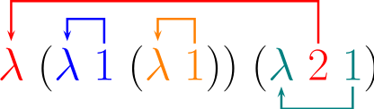

幸福迟了一夜才来。
类型系统是指一种根据所计算出值得种类对词语进行分类从而证明某程序行为不会发生的可行语法手段。
# 无类型系统# 无类型算术表达式# 语法
项的集合是最小集合T \mathcal{T} T
{ t r u e , f a l s e , 0 } ⊆ T \{true,false,0\}\subseteq \mathcal{T} { t r u e , f a l s e , 0 } ⊆ T 如果t 1 ∈ T t_1\in\mathcal{T} t 1 ∈ T { s u c c t 1 , p r e d t 1 i s z e r o t 1 } ⊆ T \{succ\;t_1,pred\;t_1\;iszero\;t_1\}\subseteq \mathcal{T} { s u c c t 1 , p r e d t 1 i s z e r o t 1 } ⊆ T
如果t 1 , t 2 , t 3 ∈ T t_1,t_2,t_3\in\mathcal{T} t 1 , t 2 , t 3 ∈ T i f t 1 t h e n t 2 e l s e t 3 ∈ T if\;t_1\;then\;t_2\;else\;t_3\in\mathcal{T} i f t 1 t h e n t 2 e l s e t 3 ∈ T
# 对项的一些归纳定义常量集合：
C o n s t s ( t r u e ) = { t r u e } ; C o n s t s ( f a l s e ) = { f a l s e } ; C o n s t s ( 0 ) = { 0 } ; C o n s t s ( s u c c t 1 ) = C o n s t s ( t 1 ) ; C o n s t s ( p r e d t 1 ) = C o n s t s ( t 1 ) ; C o n s t s ( i s z e r o t 1 ) = C o n s t s ( t 1 ) ; C o n s t s ( i f t 1 t h e n t 2 e l s e t 3 ) = C o n s t s ( t 1 ) ∪ C o n s t s ( t 2 ) ∪ C o n s t s ( t 3 ) Consts(true)=\{true\};Consts(false)=\{false\};Consts(0)=\{0\};\\
Consts(succ\;t_1)=Consts(t_1);Consts(pred\;t_1)=Consts(t_1);Consts(iszero\;t_1)=Consts(t_1);\\
Consts(if\;t_1\;then\;t_2\;else\;t_3)=Consts(t_1)\cup Consts(t_2)\cup Consts(t_3)
C o n s t s ( t r u e ) = { t r u e } ; C o n s t s ( f a l s e ) = { f a l s e } ; C o n s t s ( 0 ) = { 0 } ; C o n s t s ( s u c c t 1 ) = C o n s t s ( t 1 ) ; C o n s t s ( p r e d t 1 ) = C o n s t s ( t 1 ) ; C o n s t s ( i s z e r o t 1 ) = C o n s t s ( t 1 ) ; C o n s t s ( i f t 1 t h e n t 2 e l s e t 3 ) = C o n s t s ( t 1 ) ∪ C o n s t s ( t 2 ) ∪ C o n s t s ( t 3 )
项的长度：
s i z e ( t r u e ) = s i z e ( f a l s e ) = s i z e ( 0 ) = 1 ; s i z e ( s u c c t 1 ) = s i z e ( p r e d t 1 ) = s i z e ( i s z e r o t 1 ) = s i z e ( t 1 ) + 1 ; s i z e ( i f t 1 t h e n t 2 e l s e t 3 ) = s i z e ( t 1 ) + s i z e ( t 2 ) + s i z e ( t 3 ) + 1 ; size(true)=size(false)=size(0)=1;\\
size(succ\;t_1)=size(pred\;t_1)=size(iszero\;t_1)=size(t_1)+1;\\
size(if\;t_1\;then\;t_2\;else\;t_3)=size(t_1)+size(t_2)+size(t_3)+1;
s i z e ( t r u e ) = s i z e ( f a l s e ) = s i z e ( 0 ) = 1 ; s i z e ( s u c c t 1 ) = s i z e ( p r e d t 1 ) = s i z e ( i s z e r o t 1 ) = s i z e ( t 1 ) + 1 ; s i z e ( i f t 1 t h e n t 2 e l s e t 3 ) = s i z e ( t 1 ) + s i z e ( t 2 ) + s i z e ( t 3 ) + 1 ;
项的深度：
d e p t h ( t r u e ) = d e p t h ( f a l s e ) = d e p t h ( 0 ) = 1 ; d e p t h ( s u c c t 1 ) = d e p t h ( p r e d t 1 ) = d e p t h ( i s z e r o t 1 ) = d e p t h ( t 1 ) + 1 ; d e p t h ( i f t 1 t h e n t 2 e l s e t 3 ) = m a x ( d e p t h ( t 1 ) , d e p t h ( t 2 ) , d e p t h ( t 3 ) ) + 1 ; depth(true)=depth(false)=depth(0)=1;\\
depth(succ\;t_1)=depth(pred\;t_1)=depth(iszero\;t_1)=depth(t_1)+1;\\
depth(if\;t_1\;then\;t_2\;else\;t_3)=max(depth(t_1),depth(t_2),depth(t_3))+1;
d e p t h ( t r u e ) = d e p t h ( f a l s e ) = d e p t h ( 0 ) = 1 ; d e p t h ( s u c c t 1 ) = d e p t h ( p r e d t 1 ) = d e p t h ( i s z e r o t 1 ) = d e p t h ( t 1 ) + 1 ; d e p t h ( i f t 1 t h e n t 2 e l s e t 3 ) = m a x ( d e p t h ( t 1 ) , d e p t h ( t 2 ) , d e p t h ( t 3 ) ) + 1 ;
有∣ C o n s t s ( t ) ∣ ≤ s i z e ( t ) |Consts(t)|\leq size(t) ∣ C o n s t s ( t ) ∣ ≤ s i z e ( t )
同理，对项上的一个谓词，我们可以对长度或对深度归纳，或结构归纳。
# 求值
语法：
t : : = t r u e ∣ f a l s e ∣ i f t t h e n t e l s e t v : : = t r u e ∣ f a l s e t::=true|false|if\;t\;then\;t\;else\;t\\
v::=true|false
t : : = t r u e ∣ f a l s e ∣ i f t t h e n t e l s e t v : : = t r u e ∣ f a l s e
求值：
i f t r u e t h e n t 2 e l s e t 3 → t 2 ( E − I F T R U E ) i f f a l s e t h e n t 2 e l s e t 3 → t 3 ( E − I F F A L S E ) t 1 → t 1 ′ i f t 1 t h e n t 2 e l s e t 3 → i f t 1 ′ t h e n t 2 e l s e t 3 ( E − I F ) if\;true\;then\;t_2\;else\;t_3\rightarrow t_2(E-IFTRUE)\\
if\;false\;then\;t_2\;else\;t_3\rightarrow t_3(E-IFFALSE)\\
\frac{t_1\rightarrow t_1'}{if\;t_1\;then\;t_2\;else\;t_3\rightarrow if\;t_1'\;then\;t_2\;else\;t_3}(E-IF)
i f t r u e t h e n t 2 e l s e t 3 → t 2 ( E − I F T R U E ) i f f a l s e t h e n t 2 e l s e t 3 → t 3 ( E − I F F A L S E ) i f t 1 t h e n t 2 e l s e t 3 → i f t 1 ′ t h e n t 2 e l s e t 3 t 1 → t 1 ′ ( E − I F )
t → t ′ t\rightarrow t' t → t ′
# 无类型算术表达式
语法形式:
t : : = 0 ∣ s u c c t ∣ p r e d t ∣ i s z e r o t ∣ t r u e ∣ f a l s e ∣ i f t t h e n t e l s e t v : : = n v ∣ t r u e ∣ f a l s e n v : : = 0 ∣ s u c c n v t::=0|succ\;t|pred\;t|iszero\;t|true|false|if\;t\;then\;t\;else\;t\\
v::=nv|true|false\\
nv::=0|succ\;nv
t : : = 0 ∣ s u c c t ∣ p r e d t ∣ i s z e r o t ∣ t r u e ∣ f a l s e ∣ i f t t h e n t e l s e t v : : = n v ∣ t r u e ∣ f a l s e n v : : = 0 ∣ s u c c n v
我们常用阿拉伯数字来记s u c c 0 = 1 , s u c c s u c c 0 = 2 , . . . succ\;0=1,succ\;succ\;0=2,... s u c c 0 = 1 , s u c c s u c c 0 = 2 , . . .
求值规则:
i f t r u e t h e n t 2 e l s e t 3 → t 2 ( E − I F T R U E ) i f f a l s e t h e n t 2 e l s e t 3 → t 3 ( E − I F F A L S E ) t 1 → t 1 ′ i f t 1 t h e n t 2 e l s e t 3 → i f t 1 ′ t h e n t 2 e l s e t 3 ( E − I F ) t 1 → t 1 ′ s u c c t 1 → s u c c t 1 ′ ( E − S U C C ) p r e d 0 → 0 ( E − P R E D Z E R O ) p r e d ( s u c c n v 1 ) → n v 1 ( E − P R E D S U C C ) t 1 → t 1 ′ p r e d t 1 → p r e d t 1 ′ ( E − P R E D ) i s z e r o 0 → t r u e ( E − I S Z E R O Z E R O ) i s z e r o ( s u c c n v 1 ) → f a l s e ( E − I S Z E R O S U C C ) t 1 → t 1 ′ i s z e r o t 1 → i s z e r o t 2 ( E − I S Z E R O ) if\;true\;then\;t_2\;else\;t_3\rightarrow t_2\quad(E-IFTRUE)\\
if\;false\;then\;t_2\;else\;t_3\rightarrow t_3\quad(E-IFFALSE)\\
\frac{t_1\rightarrow t_1'}{if\;t_1\;then\;t_2\;else\;t_3\rightarrow if\;t_1'\;then\;t_2\;else\;t_3}\quad(E-IF)\\
\frac{t_1\rightarrow t_1'}{succ\;t_1\rightarrow succ t_1'}\quad(E-SUCC)\\
pred\;0\rightarrow 0\quad(E-PREDZERO)\\
pred(succ\;nv_1)\rightarrow nv_1\quad(E-PREDSUCC)\\
\frac{t_1\rightarrow t_1'}{pred\;t_1\rightarrow pred\;t_1'}\quad(E-PRED)\\
iszero\;0\rightarrow true\quad(E-ISZEROZERO)\\
iszero(succ\;nv_1)\rightarrow false\quad(E-ISZEROSUCC)\\
\frac{t_1\rightarrow t_1'}{iszero\;t_1\rightarrow iszero\;t_2}\quad(E-ISZERO)
i f t r u e t h e n t 2 e l s e t 3 → t 2 ( E − I F T R U E ) i f f a l s e t h e n t 2 e l s e t 3 → t 3 ( E − I F F A L S E ) i f t 1 t h e n t 2 e l s e t 3 → i f t 1 ′ t h e n t 2 e l s e t 3 t 1 → t 1 ′ ( E − I F ) s u c c t 1 → s u c c t 1 ′ t 1 → t 1 ′ ( E − S U C C ) p r e d 0 → 0 ( E − P R E D Z E R O ) p r e d ( s u c c n v 1 ) → n v 1 ( E − P R E D S U C C ) p r e d t 1 → p r e d t 1 ′ t 1 → t 1 ′ ( E − P R E D ) i s z e r o 0 → t r u e ( E − I S Z E R O Z E R O ) i s z e r o ( s u c c n v 1 ) → f a l s e ( E − I S Z E R O S U C C ) i s z e r o t 1 → i s z e r o t 2 t 1 → t 1 ′ ( E − I S Z E R O )
项 t 被称为范式 当且仅当不存在t ′ t' t ′ t → t ′ t\rightarrow t' t → t ′
显然，范式就是那些t r u e , f a l s e , 0 , s u c c ( 0 ) , s u c c ( s u c c ( 0 ) ) , . . . true,false,0,succ(0),succ(succ(0)),... t r u e , f a l s e , 0 , s u c c ( 0 ) , s u c c ( s u c c ( 0 ) ) , . . .
我们认为s u c c t r u e succ\;true s u c c t r u e
定义 ，如果一个封闭项是一个范式但不是一个值，则称该项受阻 。
# 无类型的 lambda 演算# 基础
lambda 演算用最可能纯的形式表示函数的定义和应用。在 lambda 演算中，每个事物均是一个函数：函数接受的参数是函数，一个函数的结果是另一个函数。
lambda 演算的语法由 3 种项组成。一个变量 x 本身是一个项；一个变量 x 在项t 1 t_1 t 1 λ x . t 1 \lambda x.t_1 λ x . t 1 t 1 t 2 t_1\;t_2 t 1 t 2
t : : = x ∣ λ x . t ∣ t t t::=x|\lambda x.t|t\;t
t : : = x ∣ λ x . t ∣ t t
我们规定，分析 lambda 演算式子时，从左到右分析，而抽象的顺序是从右到左。即：
t 1 t 2 t 3 = ( t 1 t 2 ) t 3 λ x . λ y . t = λ x . ( λ y . t ) t_1\;t_2\;t_3=(t_1\;t_2)\;t_3\\
\lambda x.\lambda y.t=\lambda x.(\lambda y.t)
t 1 t 2 t 3 = ( t 1 t 2 ) t 3 λ x . λ y . t = λ x . ( λ y . t )
# 抽象语法和具体语法# 辖域
对变量 x，当它出现在抽象λ x . t \lambda x.t λ x . t 囿界 （或称被界定）的。等价地，也可以说λ x \lambda x λ x x y xy x y λ y . x y \lambda y.xy λ y . x y ( λ x . x ) x (\lambda x.x)x ( λ x . x ) x
一个不含自由变量的项称为封闭项 （或称为组合子 ）。最简单的组合子就是恒等函数：
i d = λ x . x id=\lambda x.x
i d = λ x . x
规定，抽象总是尽量向右延展的，而应用是从左到右的。譬如：
λ x . x y = λ x . ( x y ) ≠ ( λ x . x ) y ( λ x . x y ) a → a y ( λ x . x ) y a → y a i d x y = ( i d x ) y \lambda x.x\;y=\lambda x.(x\;y)\neq(\lambda x.x)y\\
(\lambda x.x\;y)a\rightarrow a\;y\\
(\lambda x.x)y\;a\rightarrow y\;a\\
idx\;y=(idx)\;y
λ x . x y = λ x . ( x y ) = ( λ x . x ) y ( λ x . x y ) a → a y ( λ x . x ) y a → y a i d x y = ( i d x ) y
# 操作语义
纯形式的 lambda 演算没有内置的常量或原语算子 —— 没有数、算术运算、条件子、记录、循环、序列、I/O 等到。项计算的唯一含义是将函数应用到参数（而参数本身也是函数）。
计算的每一步是重写一个左端部分为抽象的应用，用右端部分代换抽象体中的囿变量。
( λ x . t 12 ) t 2 → [ x ↦ t 2 ] t 12 (\lambda x.t_{12})t_2\rightarrow [x\mapsto t_2]t_{12}
( λ x . t 1 2 ) t 2 → [ x ↦ t 2 ] t 1 2
其中[ x ↦ t 2 ] t 12 [x\mapsto t_2]t_{12} [ x ↦ t 2 ] t 1 2 t 2 t_2 t 2 t 12 t_{12} t 1 2
( λ x . x ) y → y ( λ x . x ( λ x . x ) ) ( u r ) → ( u r ) ( λ x . x ) (\lambda x.x)y\rightarrow y\\
(\lambda x.x(\lambda x.x))(u\;r)\rightarrow(u\;r)(\lambda x.x)
( λ x . x ) y → y ( λ x . x ( λ x . x ) ) ( u r ) → ( u r ) ( λ x . x )
（其中第二个式子实际上是用( u r ) (u\;r) ( u r ) x ( λ x . x ) x(\lambda x.x) x ( λ x . x ) ( u r ) ( λ x . x ) (u\;r)(\lambda x.x) ( u r ) ( λ x . x )
考虑项：
( λ x . x ) ( ( λ x . x ) ( λ z . ( λ x . x ) z ) ) (\lambda x.x)((\lambda x.x)(\lambda z.(\lambda x.x)z))
( λ x . x ) ( ( λ x . x ) ( λ z . ( λ x . x ) z ) )
记λ x . x = i d \lambda x.x=id λ x . x = i d ∀ t , ( λ x . x ) t = i d t → t \forall t,(\lambda x.x)t=idt\rightarrow t ∀ t , ( λ x . x ) t = i d t → t
i d ( i d ( λ z . i d z ) ) id(id(\lambda z.idz))
i d ( i d ( λ z . i d z ) )
在全 beta 归约下，任何时刻可以归约任何一个约式。可以选择：
从内到外归约：
i d ( i d ( λ z . i d z ) ) → i d ( i d ( λ z . z ) ) → i d ( λ z . z ) → λ z . z id(id(\lambda z.idz))\\
\rightarrow id(id(\lambda z.z))\\
\rightarrow id(\lambda z.z)\\
\rightarrow \lambda z.z
i d ( i d ( λ z . i d z ) ) → i d ( i d ( λ z . z ) ) → i d ( λ z . z ) → λ z . z
从外到内归约：
i d ( i d ( λ z . i d z ) ) → i d ( λ z . i d z ) → λ z . i d z → λ z . z id(id(\lambda z.idz))\\
\rightarrow id(\lambda z.idz)\\
\rightarrow \lambda z.idz\\
\rightarrow \lambda z.z
i d ( i d ( λ z . i d z ) ) → i d ( λ z . i d z ) → λ z . i d z → λ z . z
我们也可以不允许抽象内部的归约。即λ z . i d z \lambda z.idz λ z . i d z λ z . \lambda z. λ z .
i d ( i d ( λ z . i d z ) ) → i d ( λ z . i d z ) → λ z . i d z id(id(\lambda z.idz))\\
\rightarrow id(\lambda z.idz)\\
\rightarrow \lambda z.idz
i d ( i d ( λ z . i d z ) ) → i d ( λ z . i d z ) → λ z . i d z
# lambda 演算中的程序设计我理解的 lambda 演算实际上还是在描述函数。譬如λ x . x + 1 \lambda x.x+1 λ x . x + 1
如果想描述的函数有多自变量怎么办？λ ( x , y ) . s \lambda(x,y).s λ ( x , y ) . s λ x . λ y . s \lambda x.\lambda y.s λ x . λ y . s λ ( x , y ) . x + y ( λ x . λ y . x + y ) 3 4 → ( λ x . x + 3 ) 4 → 4 + 3 \lambda(x,y).x+y\\
(\lambda x.\lambda y.x+y)3\;4\\
\rightarrow(\lambda x.x+3)\;4\\
\rightarrow 4+3
λ ( x , y ) . x + y ( λ x . λ y . x + y ) 3 4 → ( λ x . x + 3 ) 4 → 4 + 3
# Church 布尔式
定义：
t r u = λ t . λ f . t f l s = λ t . λ f . f t e s t = λ l . λ m . λ n . l m n tru=\lambda t.\lambda f.t\\
fls=\lambda t.\lambda f.f\\
test=\lambda l.\lambda m.\lambda n.l\;m\;n
t r u = λ t . λ f . t f l s = λ t . λ f . f t e s t = λ l . λ m . λ n . l m n
为什么要定义这些东西？实际上，它用函数来描述了 if 语句：
t e s t t r u v w = ( λ l . λ m . λ n . l m n ) t r u v w → ( λ m . λ n . t r u m n ) v w → ( λ n . t r u v n ) w → t r u v w = ( λ t . λ f . t ) v w → ( λ f . v ) w → v test\;tru\;v\;w\\
=(\lambda l.\lambda m.\lambda n.l\;m\;n)tru\;v\;w\\
\rightarrow(\lambda m.\lambda n.tru\;m\;n)v\;w\\
\rightarrow(\lambda n.tru\;v\;n)w\\
\rightarrow tru\;v\;w\\
=(\lambda t.\lambda f.t)v\;w\\
\rightarrow(\lambda f.v)w\\
\rightarrow v
t e s t t r u v w = ( λ l . λ m . λ n . l m n ) t r u v w → ( λ m . λ n . t r u m n ) v w → ( λ n . t r u v n ) w → t r u v w = ( λ t . λ f . t ) v w → ( λ f . v ) w → v
t e s t f l s v w = ( λ l . λ m . λ n . l m n ) f l s v w → ( λ m . λ n . f l s m n ) v w → ( λ n . f l s v n ) w → f l s v w = ( λ t . λ f . f ) v w → ( λ f . f ) w → w test\;fls\;v\;w\\
=(\lambda l.\lambda m.\lambda n.l\;m\;n)fls\;v\;w\\
\rightarrow(\lambda m.\lambda n.fls\;m\;n)v\;w\\
\rightarrow(\lambda n.fls\;v\;n)w\;\\
\rightarrow fls\;v\;w\\
=(\lambda t.\lambda f.f)v\;w\\
\rightarrow(\lambda f.f)w\\
\rightarrow w
t e s t f l s v w = ( λ l . λ m . λ n . l m n ) f l s v w → ( λ m . λ n . f l s m n ) v w → ( λ n . f l s v n ) w → f l s v w = ( λ t . λ f . f ) v w → ( λ f . f ) w → w
实际上，t r u v w tru\;v\;w t r u v w w w w f l s v w fls\;v\;w f l s v w w w w
t e s t b v w test\;b\;v\;w t e s t b v w
我们可以定义逻辑联结词：
a n d = λ b . λ c . b c f l s and=\lambda b.\lambda c.b\;c\;fls
a n d = λ b . λ c . b c f l s
它的作用是：
a n d t r u t r u = ( λ b . λ c . b c f l s ) t r u t r u → ( λ c . t r u c f l s ) t r u → t r u t r u f l s → t r u a n d f l s t r u → f l s and\;tru\;tru\\
=(\lambda b.\lambda c.b\;c\;fls)tru\;tru\\
\rightarrow (\lambda c.tru\;c\;fls)tru\\
\rightarrow tru\;tru\;fls\\
\rightarrow tru\\
and\;fls\;tru\rightarrow fls
a n d t r u t r u = ( λ b . λ c . b c f l s ) t r u t r u → ( λ c . t r u c f l s ) t r u → t r u t r u f l s → t r u a n d f l s t r u → f l s
同理：
o r = λ b . λ c . b t r u c n o t = λ b . b f l s t r u or=\lambda b.\lambda c.b\;tru\;c\\
not=\lambda b.b\;fls\;tru
o r = λ b . λ c . b t r u c n o t = λ b . b f l s t r u
我们能定义值得序对为项：
p a i r = λ f . λ s . λ b . b f s f s t = λ p . p t r u s n d = λ p . p f l s pair=\lambda f.\lambda s.\lambda b.b\;f\;s\\
fst=\lambda p.p\;tru\\
snd=\lambda p.p\;fls
p a i r = λ f . λ s . λ b . b f s f s t = λ p . p t r u s n d = λ p . p f l s
有：
f s t ( p a i r v w ) = f s t ( ( λ f . λ s . λ b . b f s ) v w ) → f s t ( λ b . b v w ) = ( λ p . p t r u ) ( λ b . b v w ) → ( λ b . b v w ) t r u → t r u v w → v fst(pair\;v\;w)\\
=fst((\lambda f.\lambda s.\lambda b.b\;f\;s)v\;w)\\
\rightarrow fst(\lambda b.b\;v\;w)\\
=(\lambda p.p\;tru)\;(\lambda b.b\;v\;w)\\
\rightarrow (\lambda b.b\;v\;w)\;tru\\
\rightarrow tru\;v\;w\\
\rightarrow v
f s t ( p a i r v w ) = f s t ( ( λ f . λ s . λ b . b f s ) v w ) → f s t ( λ b . b v w ) = ( λ p . p t r u ) ( λ b . b v w ) → ( λ b . b v w ) t r u → t r u v w → v
# Church 数值
定义 Church 数值：
c 0 = λ s . λ z . z c 1 = λ s . λ z . s z c 2 = λ s . λ z . s ( s z ) c 3 = λ s . λ z . s ( s ( s z ) ) . . . . . . . c_0=\lambda s.\lambda z.z\\
c_1=\lambda s.\lambda z.s\;z\\
c_2=\lambda s.\lambda z.s\;(s\;z)\\
c_3=\lambda s.\lambda z.s\;(s\;(s\;z))\\
.......
c 0 = λ s . λ z . z c 1 = λ s . λ z . s z c 2 = λ s . λ z . s ( s z ) c 3 = λ s . λ z . s ( s ( s z ) ) . . . . . . .
s u c c = λ n . λ s . λ z . s ( n s z ) s u c c c 3 = ( λ n . λ s . λ z . s ( n s z ) ) c 3 → λ s . λ z . s ( c 3 s z ) = λ s . λ z . s ( [ λ s . λ z . s ( s ( s z ) ) ] s z ) → λ s . λ z . s ( [ λ z . s ( s ( s z ) ) ] z ) → λ s . λ z . s ( s ( s ( s z ) ) ) = c 4 succ=\lambda n.\lambda s.\lambda z.s\;(n\;s\;z)\\
succ\;c_3=(\lambda n.\lambda s.\lambda z.s\;(n\;s\;z))c_3\\
\rightarrow\lambda s.\lambda z.s\;(c_3\;s\;z)\\
=\lambda s.\lambda z.s\;([\lambda s.\lambda z.s(s(s\;z))]s\;z)\\
\rightarrow\lambda s.\lambda z.s([\lambda z.s(s(s\;z))]z)\\
\rightarrow\lambda s.\lambda z.s(s(s(s\;z)))=c_4
s u c c = λ n . λ s . λ z . s ( n s z ) s u c c c 3 = ( λ n . λ s . λ z . s ( n s z ) ) c 3 → λ s . λ z . s ( c 3 s z ) = λ s . λ z . s ( [ λ s . λ z . s ( s ( s z ) ) ] s z ) → λ s . λ z . s ( [ λ z . s ( s ( s z ) ) ] z ) → λ s . λ z . s ( s ( s ( s z ) ) ) = c 4
这里解释下。还记得抽象式中，λ s . λ z . s z \lambda s.\lambda z.s\;z λ s . λ z . s z c n = λ s . λ z . s n z c_n=\lambda s.\lambda z.s^n\;z c n = λ s . λ z . s n z c n a b → a n b c_n\;a\;b\rightarrow a^n\;b c n a b → a n b
那么后继函数实际上就是用了这个求值，使得s ( c n s z ) → s ( s n z ) = s n + 1 z s\;(c_n\;s\;z)\rightarrow s\;(s^n\;z)=s^{n+1}\;z s ( c n s z ) → s ( s n z ) = s n + 1 z
定义加法：
p l u s = λ m . λ n . λ s . λ z . m s ( n s z ) plus=\lambda m.\lambda n.\lambda s.\lambda z.m\;s\;(n\;s\;z)\\
p l u s = λ m . λ n . λ s . λ z . m s ( n s z )
只看函数内容m s ( n s z ) m\;s\;(n\;s\;z) m s ( n s z )
c a s ( c b s z ) → s a ( c b s z ) → s a ( s b z ) = s a + b z c_a\;s\;(c_b\;s\;z)\rightarrow s^a\;(c_b\;s\;z)\rightarrow s^a\;(s^b\;z)=s^{a+b}\;z
c a s ( c b s z ) → s a ( c b s z ) → s a ( s b z ) = s a + b z
所以有p l u s c n c m → c n + m plus\;c_n\;c_m\rightarrow c_{n+m} p l u s c n c m → c n + m
定义乘法：
t i m e s = λ m . λ n . m ( p l u s n ) c 0 times=\lambda m.\lambda n.m\;(plus\;n)\;c_0
t i m e s = λ m . λ n . m ( p l u s n ) c 0
只看函数内容m ( p l u s n ) c 0 m\;(plus\;n)\;c_0 m ( p l u s n ) c 0
c a ( p l u s c b ) c 0 → ( p l u s c b ) a c 0 = p l u s c b ( p l u s c b ( . . . p l u s c b c 0 ) ) ) ) → c a × b c_a\;(plus\;c_b)\;c_0\rightarrow (plus\;c_b)^a\;c_0=plus\;c_b\;(plus\;c_b\;(...\;plus\;c_b\;c_0))))\\
\rightarrow c_{a\times b}
c a ( p l u s c b ) c 0 → ( p l u s c b ) a c 0 = p l u s c b ( p l u s c b ( . . . p l u s c b c 0 ) ) ) ) → c a × b
因为实际上就是把c b c_b c b c 0 c_0 c 0
定义判零：
i s z r o = λ m . m ( λ x . f l s ) t r u i s z r o c 0 → c 0 ( λ x . f l s ) t r u iszro=\lambda m.m\;(\lambda x.fls)\;tru\\
iszro\;c_0\rightarrow c_0\;(\lambda x.fls)\;tru\\
i s z r o = λ m . m ( λ x . f l s ) t r u i s z r o c 0 → c 0 ( λ x . f l s ) t r u
\rightarrow(\lambda z.z);tru\
返回值也是个 C h u r c h 布尔值。 返回值也是个Church布尔值。
返 回 值 也 是 个 C h u r c h 布 尔 值 。
z z = p a i r c 0 c 0 s s = λ p . p a i r ( s n d p ) ( p l u s c 1 ( s n d p ) ) p r d = λ m . f s t ( m s s z z ) zz=pair\;c_0\;c_0\\
ss=\lambda p.pair\;(snd\;p)\;(plus\;c_1\;(snd\;p))\\
prd=\lambda m.fst\;(m\;ss\;zz)
z z = p a i r c 0 c 0 s s = λ p . p a i r ( s n d p ) ( p l u s c 1 ( s n d p ) ) p r d = λ m . f s t ( m s s z z )
为什么它可以实现前趋呢？不难发现，p r d c n → f s t ( s s n z z ) prd\;c_n\rightarrow fst\;(ss^n\;zz) p r d c n → f s t ( s s n z z )
而s s z z ss\;zz s s z z p a i r c 0 c 1 pair\;c_0\;c_1 p a i r c 0 c 1 s s 2 z z = p a i r c 1 c 2 ss^2\;zz=pair\;c_1\;c_2 s s 2 z z = p a i r c 1 c 2 s s n z z = p a i r c n − 1 c n ss^n\;zz=pair\;c_{n-1}\;c_n s s n z z = p a i r c n − 1 c n
所以p r d c n → f s t ( p a i r c n − 1 c n ) → c n − 1 prd\;c_n\rightarrow fst\;(pair\;c_{n-1}\;c_n)\rightarrow c_{n-1} p r d c n → f s t ( p a i r c n − 1 c n ) → c n − 1
定义减法：
m i n u s = λ m . λ n . n p r d m m i n u s c a c b → c b p r d c a → p r d b c a → c a − b minus=\lambda m.\lambda n.n\;prd\;m\\
minus\;c_a\;c_b\rightarrow c_b\;prd\;c_a\rightarrow prd^b\;c_a\rightarrow c_{a-b}
m i n u s = λ m . λ n . n p r d m m i n u s c a c b → c b p r d c a → p r d b c a → c a − b
定义判等：
e q u a l = λ m . λ n . i s z r o ( m i n u s m n ) equal=\lambda m.\lambda n.iszro(minus\;m\;n)
e q u a l = λ m . λ n . i s z r o ( m i n u s m n )
# 丰富演算 ——Church 编码和真实值的转换
可以定义抽象，使其可以将 Church 布尔式转化为之前无类型算术表达式中真正的布尔式：
r e a l b o o l = λ b . b t r u e f a l s e r e a l b o o l t r u → t r u e ; r e a l b o o l f l s → f a l s e ; realbool=\lambda b.b\;true\;false\\
realbool\;tru\rightarrow true;\\
realbool fls\rightarrow false;
r e a l b o o l = λ b . b t r u e f a l s e r e a l b o o l t r u → t r u e ; r e a l b o o l f l s → f a l s e ;
同理可以反过来转换：
c h u r c h b o o l = λ b . i f b t h e n t r u e l s e f l s c h u r c h b o o l t r u e → i f t r u e t h e n t r u e l s e f l s → t r u c h u r c h b o o l f a l s e → f l s churchbool=\lambda b.if\;b\;then\;tru\;else\;fls\\
churchbool\;true\rightarrow if\;true\;then\;tru\;else\;fls\rightarrow tru\\
churchbool false\rightarrow fls
c h u r c h b o o l = λ b . i f b t h e n t r u e l s e f l s c h u r c h b o o l t r u e → i f t r u e t h e n t r u e l s e f l s → t r u c h u r c h b o o l f a l s e → f l s
这里的推导，既可以根据 λ 演算的规则，也可以根据无类型算术表达式的推导规则。
同样也可以定义，真正判等：（我们如果带了个真正，就表示求值是个 true 或 false，而不是 Church 编码的布尔式）
r e a l e q = λ m . λ n . r e a l b o o l ( e q u a l m n ) realeq=\lambda m.\lambda n.realbool(equal\;m\;n)
r e a l e q = λ m . λ n . r e a l b o o l ( e q u a l m n )
Church 数值转真正数值：
r e a l n a t = λ m . m ( λ x . s u c c x ) 0 r e a l n a t c 3 → s u c c s u c c s u c c 0 = 3 realnat=\lambda m.m\;(\lambda x.succ\;x)\;0\\
realnat\;c_3\rightarrow succ\;succ\;succ\;0=3
r e a l n a t = λ m . m ( λ x . s u c c x ) 0 r e a l n a t c 3 → s u c c s u c c s u c c 0 = 3
我们不能直接定义r e a l n a t = λ m . m s u c c 0 realnat=\lambda m.m\;succ\;0 r e a l n a t = λ m . m s u c c 0 s u c c succ s u c c
# 递归
有些抽象在归约时，仍是他自己。譬如：
o m e g a = ( λ x . x x ) ( λ x . x x ) omega=(\lambda x.x\;x)(\lambda x.x\;x)
o m e g a = ( λ x . x x ) ( λ x . x x )
不动点组合式 ：
f i x = λ f . ( λ x . f ( λ y . x x y ) ) ( λ x . f ( λ y . x x y ) ) fix=\lambda f.(\lambda x.f\;(\lambda y.x\;x\;y))(\lambda x.f\;(\lambda y.x\;x\;y))
f i x = λ f . ( λ x . f ( λ y . x x y ) ) ( λ x . f ( λ y . x x y ) )
这有啥用呢？实际上，它可以解决递归问题。用最简单的阶乘函数来考虑下：
g = λ f c t . λ n . i f r e a l e q n c 0 t h e n c 1 e l s e ( t i m e s n ( f c t ( p r d n ) ) ) f a c t o r i a l = f i x g g=\lambda fct.\lambda n.if\;realeq\;n\;c_0\;then\;c_1\;else\;(times\;n\;(fct\;(prd\;n)))\\
factorial=fix\;g
g = λ f c t . λ n . i f r e a l e q n c 0 t h e n c 1 e l s e ( t i m e s n ( f c t ( p r d n ) ) ) f a c t o r i a l = f i x g
先定义g = λ f . < . . . > g=\lambda f.<...> g = λ f . < . . . > < . . . > <...> < . . . > F = f i x g F=fix\;g F = f i x g
以一个例子，考虑下f a c t o r i a l c 3 factorial\;c_3 f a c t o r i a l c 3
f a c t o r i a l c 3 = f i x g c 3 → h h c 3 ( h : = λ x . g ( λ y . x x y ) ) → g f c t c 3 ( f c t : = λ y . h h y ) → λ n . i f r e a l e q n c 0 t h e n c 1 e l s e ( t i m e s n ( f c t ( p r d n ) ) ) c 3 → i f r e a l e q c 3 c 0 t h e n c 1 e l s e ( t i m e s c 3 ( f c t ( p r d c 3 ) ) ) → ∗ t i m e s c 3 ( f c t ( p r d c 3 ) ) → ∗ t i m e s c 3 f c t c 2 → ∗ t i m e s c 3 ( g f c t c 2 ) → ∗ t i m e s c 3 ( i f r e a l e q c 2 c 0 t h e n c 1 e l s e t i m e s c 2 ( f c t ( p r d c 2 ) ) ) → ∗ t i m e s c 3 ( t i m e s c 2 c 1 ) → ∗ c 6 factorial\;c_3=fix\;g\;c_3\\
\rightarrow h\;h\;c_3\quad (h:=\lambda x.g\;(\lambda y.x\;x\;y))\\
\rightarrow g\;fct\;c_3\quad(fct:=\lambda y.h\;h\;y)\\
\rightarrow \lambda n.if\;realeq\;n\;c_0\;then\;c_1\;else\;(times\;n\;(fct\;(prd\;n)))\;c_3\\
\rightarrow if\;realeq\;c_3\;c_0\;then\;c_1\;else\;(times\;c_3\;(fct\;(prd\;c_3)))\\
\rightarrow^*times\;c_3\;(fct\;(prd\;c_3))\\
\rightarrow^* times\;c_3\;fct\;c_2\\
\rightarrow^* times\;c_3\;(g\;fct\;c_2)\\
\rightarrow^* times\;c_3\;(if\;realeq\;c_2\;c_0\;then\;c_1\;else\;times\;c_2\;(fct(prd\;c_2)))\\
\rightarrow^* times\;c_3\;(times\;c_2\;c_1)\\
\rightarrow^* c_6
f a c t o r i a l c 3 = f i x g c 3 → h h c 3 ( h : = λ x . g ( λ y . x x y ) ) → g f c t c 3 ( f c t : = λ y . h h y ) → λ n . i f r e a l e q n c 0 t h e n c 1 e l s e ( t i m e s n ( f c t ( p r d n ) ) ) c 3 → i f r e a l e q c 3 c 0 t h e n c 1 e l s e ( t i m e s c 3 ( f c t ( p r d c 3 ) ) ) → ∗ t i m e s c 3 ( f c t ( p r d c 3 ) ) → ∗ t i m e s c 3 f c t c 2 → ∗ t i m e s c 3 ( g f c t c 2 ) → ∗ t i m e s c 3 ( i f r e a l e q c 2 c 0 t h e n c 1 e l s e t i m e s c 2 ( f c t ( p r d c 2 ) ) ) → ∗ t i m e s c 3 ( t i m e s c 2 c 1 ) → ∗ c 6
其中关键在于：
f c t c 2 → h h c 2 → g ( λ y . h h y ) c 2 → g f c t c 2 fct\;c_2\rightarrow h\;h\;c_2\rightarrow g\;(\lambda y.h\;h\;y)\;c_2\rightarrow g\;fct\;c_2
f c t c 2 → h h c 2 → g ( λ y . h h y ) c 2 → g f c t c 2
即f c t fct f c t
# 形式化定义其实前面已经用半天了，又回来形式化定义下。
定义项的自由变量，记为F V ( t ) FV(t) F V ( t )
F V ( x ) = { x } F V ( λ x . t 1 ) = F V ( t 1 ) − { x } F V ( t 1 t 2 ) = F V ( t 1 ) ∪ F V ( t 2 ) FV(x)=\{x\}\\
FV(\lambda x.t_1)=FV(t_1)-\{x\}\\
FV(t_1\;t_2)=FV(t_1)\cup FV(t_2)
F V ( x ) = { x } F V ( λ x . t 1 ) = F V ( t 1 ) − { x } F V ( t 1 t 2 ) = F V ( t 1 ) ∪ F V ( t 2 )
关于代入，首先，我们约定只是囿变量名称不同的项在所有上下文中可交替使用。即可以 “换名”：
λ x . x + y = λ w . w + y \lambda x.x+y=\lambda w.w+y
λ x . x + y = λ w . w + y
对代换的定义为：
[ x ↦ s ] x = s [ x ↦ s ] y = y i f y ≠ x [ x ↦ s ] ( λ y . t 1 ) = λ y . [ x ↦ s ] t 1 i f y ≠ x a n d y ∉ F V ( s ) [ x ↦ s ] ( t 1 t 2 ) = ( [ x ↦ s ] t 1 ) ( [ x ↦ s ] t 2 ) [x\mapsto s]x=s\\
[x\mapsto s]y=y\quad if\;y\neq x\\
[x\mapsto s](\lambda y.t_1)=\lambda y.[x\mapsto s]t_1\quad if\;y\neq x\;and\;y\notin FV(s)\\
[x\mapsto s](t_1\;t_2)=([x\mapsto s]t_1)([x\mapsto s]t_2)
[ x ↦ s ] x = s [ x ↦ s ] y = y i f y = x [ x ↦ s ] ( λ y . t 1 ) = λ y . [ x ↦ s ] t 1 i f y = x a n d y ∈ / F V ( s ) [ x ↦ s ] ( t 1 t 2 ) = ( [ x ↦ s ] t 1 ) ( [ x ↦ s ] t 2 )
其中，第三行可以先把 y 换名换成满足条件的。
lambda 演算语义的定义：
t 1 → t 1 ′ t 1 t 2 → t 1 ′ t 2 t 2 → t 2 ′ v 1 t 2 → v 1 t 2 ′ ( λ x . t 12 ) v 2 → [ x ↦ v 2 ] t 12 \frac{t_1\rightarrow t_1'}{t_1\;t_2\rightarrow t_1'\;t_2}\\
\frac{t_2\rightarrow t_2'}{v_1\;t_2\rightarrow v_1\;t_2'}\\
(\lambda x.t_{12})\;v_2\rightarrow [x\mapsto v_2]t_{12}
t 1 t 2 → t 1 ′ t 2 t 1 → t 1 ′ v 1 t 2 → v 1 t 2 ′ t 2 → t 2 ′ ( λ x . t 1 2 ) v 2 → [ x ↦ v 2 ] t 1 2
# 项的无名称表示# 项和上下文
对每个 λ 抽象，我们可以找到对应的 de Bruijn 项，即去掉囿变量，用数字替换：
λ z . ( λ y . y ( λ x . x ) ) ( λ x . z x ) = λ . ( λ . 1 ( λ . 1 ) ) ( λ . 2 1 ) \lambda z.(\lambda y.y\;(\lambda x.x))\;(\lambda x.z\;x)=\lambda.(\lambda.1\;(\lambda.1))(\lambda.2\;1)
λ z . ( λ y . y ( λ x . x ) ) ( λ x . z x ) = λ . ( λ . 1 ( λ . 1 ) ) ( λ . 2 1 )

而书上是从 0 开始标号的。
然后自由变量的话，可以用大于囿变量个数的自然数代换它。
形式化的，定义无名项：
设T \mathcal{T} T { T 0 , T 1 , . . . } \{\mathcal{T_0},\mathcal{T_1},...\} { T 0 , T 1 , . . . }
∀ 0 ≤ k < n , k ∈ T n \forall 0\leq k< n,k\in\mathcal{T}_n ∀ 0 ≤ k < n , k ∈ T n 如果t 1 ∈ T n , λ . t 1 ∈ T n − 1 t_1\in\mathcal{T}_n,\lambda.t_1\in\mathcal{T}_{n-1} t 1 ∈ T n , λ . t 1 ∈ T n − 1
如果t 1 , t 2 ∈ T n t_1,t_2\in\mathcal{T}_n t 1 , t 2 ∈ T n t 1 t 2 ∈ T n t_1\;t_2\in\mathcal{T}_n t 1 t 2 ∈ T n
仔细想一想，可以发现T n \mathcal{T}_n T n λ . 5 0 ∈ T 6 \lambda .5\;0\in\mathcal{T}_{6} λ . 5 0 ∈ T 6
我们可以对所有的 de Bruijn 变量指派一个 de Bruijn 索引（称为一个命名的上下文），例如：
Γ = x ↦ 4 y ↦ 3 z ↦ 2 a ↦ 1 b ↦ 0 \Gamma=x\mapsto 4\\y\mapsto 3\\z\mapsto 2\\
a\mapsto 1\\b\mapsto 0
Γ = x ↦ 4 y ↦ 3 z ↦ 2 a ↦ 1 b ↦ 0
那么a λ x . a = 1 λ . 2 a\;\lambda x.a=1\;\lambda.2 a λ x . a = 1 λ . 2
上面那个指派也可以简写为Γ = x , y , z , a , b \Gamma=x,y,z,a,b Γ = x , y , z , a , b
# 移位和代换
定义移位：
↑ c d ( k ) = { k i f k < c k + d i f k ≥ c ↑ c d ( λ . t 1 ) = λ . ↑ c + 1 d ( t 1 ) ↑ c d ( t 1 t 2 ) = ↑ c d ( t 1 ) ↑ c d ( t 2 ) \uparrow^d_c(k)=\begin{cases}k&if\;k<c\\k+d&if\;k\geq c\end{cases}\\
\uparrow^d_c(\lambda.t_1)=\lambda.\uparrow^d_{c+1}(t_1)\\
\uparrow^d_c(t_1\;t_2)=\uparrow^d_c(t_1)\;\uparrow^d_c(t_2)
↑ c d ( k ) = { k k + d i f k < c i f k ≥ c ↑ c d ( λ . t 1 ) = λ . ↑ c + 1 d ( t 1 ) ↑ c d ( t 1 t 2 ) = ↑ c d ( t 1 ) ↑ c d ( t 2 )
默认从 0 开始移位，例：
↑ 2 ( λ . 0 1 ( λ . 0 1 2 ) ) = λ . ↑ 1 2 0 1 ( λ . 0 1 2 ) = λ . 0 ↑ 1 2 1 ( λ . 0 1 2 ) = λ . 0 3 ( λ . ↑ 2 2 0 1 2 ) = λ . 0 3 ( λ . 0 1 4 ) \uparrow^2(\lambda.0\;1\;(\lambda.0\;1\;2))=\lambda.\uparrow^2_10\;1\;(\lambda.0\;1\;2)\\
=\lambda.0\;\uparrow^2_11\;(\lambda.0\;1\;2)\\
=\lambda.0\;3\;(\lambda.\uparrow^2_2 0\;1\;2)\\
=\lambda.0\;3\;(\lambda.0\;1\;4)
↑ 2 ( λ . 0 1 ( λ . 0 1 2 ) ) = λ . ↑ 1 2 0 1 ( λ . 0 1 2 ) = λ . 0 ↑ 1 2 1 ( λ . 0 1 2 ) = λ . 0 3 ( λ . ↑ 2 2 0 1 2 ) = λ . 0 3 ( λ . 0 1 4 )
定义代换：
[ j ↦ s ] k = { s i f k = j k e l s e [ j ↦ s ] ( λ . t 1 ) = λ . [ j + 1 ↦ ↑ 1 s ] t 1 [ j ↦ s ] ( t 1 t 2 ) = [ j ↦ s ] t 1 [ j ↦ s ] t 2 [j\mapsto s]k=\begin{cases}s&if\;k=j\\k&else\end{cases}\\
[j\mapsto s](\lambda.t_1)=\lambda.[j+1\mapsto \uparrow^1 s]t_1\\
[j\mapsto s](t_1\;t_2)=[j\mapsto s]t_1\;[j\mapsto s]t_2
[ j ↦ s ] k = { s k i f k = j e l s e [ j ↦ s ] ( λ . t 1 ) = λ . [ j + 1 ↦ ↑ 1 s ] t 1 [ j ↦ s ] ( t 1 t 2 ) = [ j ↦ s ] t 1 [ j ↦ s ] t 2
譬如对全局上下文Γ = a , b \Gamma=a,b Γ = a , b
[ b ↦ a ( λ z . a ) ] ( b ( λ x . b ) ) = [ 0 ↦ 1 ( λ . 2 ) ] ( 0 ( λ . 1 ) ) = ( 1 λ . 2 ) [ 0 ↦ 1 ( λ . 2 ) ] ( λ . 1 ) = ( 1 λ . 2 ) λ . [ 0 + 1 ↦ ↑ 0 1 ( 1 λ . 2 ) ] 1 = ( 1 λ . 2 ) λ . [ 1 ↦ ( 2 λ . 3 ) ] 1 = ( 1 λ . 2 ) λ . ( 2 λ . 3 ) = ( a λ z 1 . a ) ( λ z 2 . a λ z 3 . a ) [b\mapsto a\;(\lambda z.a)](b\;(\lambda x.b))=[0\mapsto 1\;(\lambda.2)](0\;(\lambda.1))\\
=(1\;\lambda.2)\;[0\mapsto 1\;(\lambda.2)](\lambda.1)\\
=(1\;\lambda.2)\;\lambda.[0+1\mapsto\uparrow^1_0(1\;\lambda.2)]1\\
=(1\;\lambda.2)\;\lambda.[1\mapsto(2\;\lambda.3)]1\\
=(1\;\lambda.2)\;\lambda.(2\;\lambda.3)\\
=(a\;\lambda z_1.a)\;(\lambda z_2.a\;\lambda z_3.a)
[ b ↦ a ( λ z . a ) ] ( b ( λ x . b ) ) = [ 0 ↦ 1 ( λ . 2 ) ] ( 0 ( λ . 1 ) ) = ( 1 λ . 2 ) [ 0 ↦ 1 ( λ . 2 ) ] ( λ . 1 ) = ( 1 λ . 2 ) λ . [ 0 + 1 ↦ ↑ 0 1 ( 1 λ . 2 ) ] 1 = ( 1 λ . 2 ) λ . [ 1 ↦ ( 2 λ . 3 ) ] 1 = ( 1 λ . 2 ) λ . ( 2 λ . 3 ) = ( a λ z 1 . a ) ( λ z 2 . a λ z 3 . a )
# 求值t 1 → t 1 ′ t 1 t 2 → t 1 ′ t 2 t 2 → t 2 ′ v 1 t 2 → v 1 t 2 ′ ( λ . t 12 ) v 2 → ↑ 0 − 1 ( [ 0 ↦ ↑ 0 1 v 2 ] t 12 ) \frac{t_1\rightarrow t_1'}{t_1\;t_2\rightarrow t_1'\;t_2}\\
\frac{t_2\rightarrow t_2'}{v_1\;t_2\rightarrow v_1\;t_2'}\\
(\lambda.t_{12})\;v_2\rightarrow \uparrow^{-1}_0([0\mapsto\uparrow^1_0 v_2]t_{12})
t 1 t 2 → t 1 ′ t 2 t 1 → t 1 ′ v 1 t 2 → v 1 t 2 ′ t 2 → t 2 ′ ( λ . t 1 2 ) v 2 → ↑ 0 − 1 ( [ 0 ↦ ↑ 0 1 v 2 ] t 1 2 )
例如
( λ . 1 0 2 ) ( λ . 0 ) → 0 ( λ . 0 ) 1 (\lambda.1\;0\;2)(\lambda.0)\rightarrow 0\;(\lambda.0)\;1
( λ . 1 0 2 ) ( λ . 0 ) → 0 ( λ . 0 ) 1
而不是1 ( λ . 0 ) 2 1\;(\lambda.0)\;2 1 ( λ . 0 ) 2
# 简单类型# 类型算术表达式# 类型关系
语法定义：
T : : = B o o l − − − − − − − − − − − − − − t r u e : B o o l f a l s e : B o o l t 1 : B o o l t 2 : T t 3 : T i f t 1 t h e n t 2 e l s e t 3 : T − − − − − − − − − − − − − − T : : = N a t − − − − − − − − − − − − − − 0 : N a t − − − − − − − − − − − − − − t 1 : N a t s u c c t 1 : N a t t 1 : N a t p r e d t 1 : N a t t 1 : N a t i s z r o t 1 : B o o l T::=Bool\\
--------------\\
true:Bool\\
false:Bool\\
\frac{t_1:Bool\quad t_2:T\quad t_3:T}{if\;t_1\;then\;t_2\;else\;t_3:T}\\
--------------\\
T::=Nat\\
--------------\\
0:Nat\\
--------------\\
\frac{t_1:Nat}{succ\;t_1:Nat}\\
\frac{t_1:Nat}{pred\;t_1:Nat}\\
\frac{t_1:Nat}{iszro\;t_1:Bool}\\
T : : = B o o l − − − − − − − − − − − − − − t r u e : B o o l f a l s e : B o o l i f t 1 t h e n t 2 e l s e t 3 : T t 1 : B o o l t 2 : T t 3 : T − − − − − − − − − − − − − − T : : = N a t − − − − − − − − − − − − − − 0 : N a t − − − − − − − − − − − − − − s u c c t 1 : N a t t 1 : N a t p r e d t 1 : N a t t 1 : N a t i s z r o t 1 : B o o l t 1 : N a t
注，T 表示类型。而 if 语句里表示t 2 , t 3 t_2,t_3 t 2 , t 3
定义 ，形式地，算术表达式的类型关系是项和类型之间的最小二元关系。如果存在某个 T，使得t : T t:T t : T 可类型化 的，或良类型 的。
定理 ，如果一个项是可类型化的，那么它的类型是唯一的。（t 的生成树唯一。）
# 安全性 = 进展 + 保持# 简单类型的 lambda 演算
定义 ，类型 Bool 上的简单类型集合是由下列语法产生的：
T : : = B o o l ∣ T → T T::=Bool|T\rightarrow T
T : : = B o o l ∣ T → T
类型构造子→ \rightarrow → B o o l → B o o l Bool\rightarrow Bool B o o l → B o o l λ x . t r u e : B o o l → B o o l \lambda x.true:Bool\rightarrow Bool λ x . t r u e : B o o l → B o o l
我们可以对抽象确定参数类型：λ x : T . t \lambda x:T.t λ x : T . t
像上面直接用注释的形式t : T t:T t : T 显式类型化语言 。要求类型检查其自己推导类型的称为隐式类型化语言 。显然我们主要讨论前者。
定义抽象类型的推导规则：
x : T 1 ⊢ t 2 : T 2 ⊢ λ x : T 1 : t 2 : T 1 → T 2 \frac{x:T_1\vdash t_2:T_2}{\vdash \lambda x:T_1:t_2:T_1\rightarrow T_2}
⊢ λ x : T 1 : t 2 : T 1 → T 2 x : T 1 ⊢ t 2 : T 2
中文说就是，如果确定参数 x 的类型为T 1 T_1 T 1 t 2 t_2 t 2 T 2 T_2 T 2 λ x : T 1 : t 2 \lambda x:T_1:t_2 λ x : T 1 : t 2 T 1 → T 2 T_1\rightarrow T_2 T 1 → T 2
定义 ，一个类型环境（或称类型化的上下文）Γ \Gamma Γ Γ \Gamma Γ
譬如：Γ : { x : N a t } \Gamma:\{x:Nat\} Γ : { x : N a t } Γ ⊢ i s z r o ( x ) : B o o l \Gamma\vdash iszro(x):Bool Γ ⊢ i s z r o ( x ) : B o o l ∅ ⊢ { t r u e : B o o l } \emptyset\vdash\{true:Bool\} ∅ ⊢ { t r u e : B o o l }
我们用d o m ( Γ ) dom(\Gamma) d o m ( Γ ) Γ \Gamma Γ
抽象的类型规则一般表示为：
Γ , x : T 1 ⊢ t 2 : T 2 Γ ⊢ λ x : T 1 . t 2 : T 1 → T 2 ( T − A b s ) \frac{\Gamma,x:T_1\vdash t_2:T_2}{\Gamma\vdash\lambda x:T_1.t_2:T_1\rightarrow T_2}\quad (T-Abs)
Γ ⊢ λ x : T 1 . t 2 : T 1 → T 2 Γ , x : T 1 ⊢ t 2 : T 2 ( T − A b s )
中文说就是，如果Γ ∪ { x : T 1 } \Gamma\cup\{x:T_1\} Γ ∪ { x : T 1 } t 2 : T 2 t_2:T_2 t 2 : T 2 Γ \Gamma Γ λ x : T 1 . t 2 : T 1 → T 2 \lambda x:T_1.t_2:T_1\rightarrow T_2 λ x : T 1 . t 2 : T 1 → T 2
根据定义，也有：
x : T ∈ Γ Γ ⊢ x : T ( T − V a r ) \frac{x:T\in\Gamma}{\Gamma\vdash x:T}\quad(T-Var)
Γ ⊢ x : T x : T ∈ Γ ( T − V a r )
前提x : T ∈ Γ x:T\in\Gamma x : T ∈ Γ Γ \Gamma Γ
定义应用的类型规则：
Γ ⊢ t 1 : T 1 → T 2 Γ ⊢ t 2 : T 1 Γ ⊢ t 1 t 2 : T 2 ( T − A p p ) \frac{\Gamma\vdash t_1:T_1\rightarrow T_2\quad\Gamma\vdash t_2:T_1}{\Gamma\vdash t_1\;t_2:T_2}\quad(T-App)
Γ ⊢ t 1 t 2 : T 2 Γ ⊢ t 1 : T 1 → T 2 Γ ⊢ t 2 : T 1 ( T − A p p )
纯简单类型 lambda 演算的语法定义：t : : = x ∣ λ x : T . t ∣ t t v : : = λ x : T . t T : : = T → T Γ : : = ∅ ∣ Γ , x : T t::=x|\lambda x:T.t|t\;t\\
v::=\lambda x:T.t\\
T::=T\rightarrow T\\
\Gamma::=\emptyset|\Gamma,x:T
t : : = x ∣ λ x : T . t ∣ t t v : : = λ x : T . t T : : = T → T Γ : : = ∅ ∣ Γ , x : T
语义定义：t 1 → t 1 ′ t 1 t 2 → t 1 ′ t 2 ( E − A p p 1 ) t 2 → t 2 ′ v 1 t 2 → v 1 t 2 ′ ( E − A p p 2 ) ( λ x : T 1 . t 1 ) v 2 → [ x ↦ v 2 ] t 1 ( E − A p p A b s ) x : T ∈ Γ Γ ⊢ x : T ( T − V a r ) Γ , x : T 1 ⊢ t 2 : T 2 Γ ⊢ λ x : T 1 . t 2 : T 1 → T 2 ( T − A b s ) Γ ⊢ t 1 : T 1 → T 2 Γ ⊢ t 2 : T 1 Γ ⊢ t 1 t 2 : T 2 ( T − A p p ) \frac{t_1\rightarrow t_1'}{t_1\;t_2\rightarrow t_1'\;t_2}\quad(E-App_1)\\
\frac{t_2\rightarrow t_2'}{v_1\;t_2\rightarrow v_1\;t_2'}\quad(E-App_2)\\
(\lambda x:T_1.t_1)\;v_2\rightarrow [x\mapsto v_2]t_1\quad(E-AppAbs)\\
\frac{x:T\in\Gamma}{\Gamma\vdash x:T}\quad(T-Var)\\
\frac{\Gamma,x:T_1\vdash t_2:T_2}{\Gamma\vdash\lambda x:T_1.t_2:T_1\rightarrow T_2}\quad (T-Abs)\\
\frac{\Gamma\vdash t_1:T_1\rightarrow T_2\quad\Gamma\vdash t_2:T_1}{\Gamma\vdash t_1\;t_2:T_2}\quad(T-App)\\
t 1 t 2 → t 1 ′ t 2 t 1 → t 1 ′ ( E − A p p 1 ) v 1 t 2 → v 1 t 2 ′ t 2 → t 2 ′ ( E − A p p 2 ) ( λ x : T 1 . t 1 ) v 2 → [ x ↦ v 2 ] t 1 ( E − A p p A b s ) Γ ⊢ x : T x : T ∈ Γ ( T − V a r ) Γ ⊢ λ x : T 1 . t 2 : T 1 → T 2 Γ , x : T 1 ⊢ t 2 : T 2 ( T − A b s ) Γ ⊢ t 1 t 2 : T 2 Γ ⊢ t 1 : T 1 → T 2 Γ ⊢ t 2 : T 1 ( T − A p p )
我们用λ → \lambda_\rightarrow λ →
# 类型的性质
定理 ，类型唯一性：在一个给定的类型环境Γ \Gamma Γ F V ( t ) ∈ d o m ( Γ ) FV(t)\in dom(\Gamma) F V ( t ) ∈ d o m ( Γ )
定理 [进展]：若 t 是一个封闭的，良类型的项（即存在 T，使得⊢ t : T \vdash t:T ⊢ t : T t ′ t' t ′ t → t ′ t\rightarrow t' t → t ′
引理 [置换]：如果Γ ⊢ t : T \Gamma\vdash t:T Γ ⊢ t : T Δ \Delta Δ Γ \Gamma Γ Δ ⊢ t : T \Delta\vdash t:T Δ ⊢ t : T
引理 [弱化]：如果Γ ⊢ t : T \Gamma\vdash t:T Γ ⊢ t : T x ∉ d o m ( Γ ) x\notin dom(\Gamma) x ∈ / d o m ( Γ ) Γ , x : S ⊢ t : T \Gamma,x:S\vdash t:T Γ , x : S ⊢ t : T
引理 [类型在代换下保持]：如果Γ , x : S ⊢ t : T \Gamma,x:S\vdash t:T Γ , x : S ⊢ t : T Γ ⊢ s : S \Gamma\vdash s:S Γ ⊢ s : S Γ ⊢ [ x ↦ s ] t : T \Gamma\vdash[x\mapsto s]t:T Γ ⊢ [ x ↦ s ] t : T
定理 [保持]：如果Γ ⊢ t : T \Gamma\vdash t:T Γ ⊢ t : T t → t ′ t\rightarrow t' t → t ′ Γ ⊢ t ′ : T \Gamma\vdash t':T Γ ⊢ t ′ : T
# Curry-Howard 对应# 抹除和类型性
可以定义 erase 函数去抹除对项的类型注释：
e r a s e ( x ) = x e r a s e ( λ x : T 1 . t 2 ) = λ x . e r a s e ( t 2 ) e r a s e ( t 1 t 2 ) = e r a s e ( t 1 ) e r a s e ( t 2 ) erase(x)=x\\
erase(\lambda x:T_1.t_2)=\lambda x.erase(t_2)\\
erase(t_1\;t_2)=erase(t_1)\;erase(t_2)
e r a s e ( x ) = x e r a s e ( λ x : T 1 . t 2 ) = λ x . e r a s e ( t 2 ) e r a s e ( t 1 t 2 ) = e r a s e ( t 1 ) e r a s e ( t 2 )
定理 ，若t → t ′ t\rightarrow t' t → t ′ e r a s e ( t ) → e r a s e ( t ′ ) erase(t)\rightarrow erase(t') e r a s e ( t ) → e r a s e ( t ′ ) e r a s e ( t ) → m erase(t)\rightarrow m e r a s e ( t ) → m t ′ t' t ′ t → t ′ , e r a s e ( t ′ ) = m t\rightarrow t',erase(t')=m t → t ′ , e r a s e ( t ′ ) = m
定义 ，无类型 lambda 演算中一个项 m，如果存在某个简单类型项 t，类型 T 和上下文Γ \Gamma Γ e r a s e ( t ) = m erase(t)=m e r a s e ( t ) = m Γ ⊢ t : T \Gamma\vdash t:T Γ ⊢ t : T λ → \lambda_\rightarrow λ → 可类型化的 。
# 简单扩展
我们用 A 表示基本类型 （String，Float，Nat，Bool 等），用 Unit 表示单位类型 。于是有扩展：T : : = . . . ∣ A ∣ U n i t t : : = . . . ∣ u n i t v : : = . . . ∣ u n i t − − − − − − − − − − − − − − − − Γ ⊢ u n i t : U n i t t 1 ; t 2 = ( λ x : U n i t . t 2 ) t 1 , x ∉ F V ( t 2 ) T::=...|A|Unit\\
t::=...|unit\\
v::=...|unit\\
----------------\\
\Gamma\vdash unit:Unit\\
t_1;t_2=(\lambda x:Unit.t_2)\;t_1,x\notin FV(t_2)
T : : = . . . ∣ A ∣ U n i t t : : = . . . ∣ u n i t v : : = . . . ∣ u n i t − − − − − − − − − − − − − − − − Γ ⊢ u n i t : U n i t t 1 ; t 2 = ( λ x : U n i t . t 2 ) t 1 , x ∈ / F V ( t 2 )
Unit 的作用类似于 C 和 Java 中的 void 类型。
# 序列和通配符t 1 → t 1 ′ t 1 ; t 2 → t 1 ′ ; t 2 ( E − S e q ) u n i t ; t 2 → t 2 Γ ⊢ t 1 : U n i t Γ ⊢ t 2 : T 2 Γ ⊢ t 1 ; t 2 : T 2 ( T − S e q ) \frac{t_1\rightarrow t_1'}{t_1;t_2\rightarrow t_1';t_2}\quad(E-Seq)\\
unit;t_2\rightarrow t_2\\
\frac{\Gamma\vdash t_1:Unit\quad \Gamma\vdash t_2:T_2}{\Gamma\vdash t_1;t_2:T_2}\quad(T-Seq)
t 1 ; t 2 → t 1 ′ ; t 2 t 1 → t 1 ′ ( E − S e q ) u n i t ; t 2 → t 2 Γ ⊢ t 1 ; t 2 : T 2 Γ ⊢ t 1 : U n i t Γ ⊢ t 2 : T 2 ( T − S e q )
这时候，会发现这个求值规则实际上是符合t 1 ; t 2 = ( λ x : U n i t . t 2 ) t 1 t_1;t_2=(\lambda x:Unit.t_2)\;t_1 t 1 ; t 2 = ( λ x : U n i t . t 2 ) t 1
定理 ，用λ E \lambda^E λ E λ I \lambda^I λ I
设e ∈ λ E → λ I e\in\lambda^E\rightarrow\lambda^I e ∈ λ E → λ I ( λ x : U n i t . t 2 ) t 1 (\lambda x:Unit.t_2)\;t_1 ( λ x : U n i t . t 2 ) t 1 t 1 ; t 2 t_1;t_2 t 1 ; t 2 λ E \lambda^E λ E
t → E t ′ t\rightarrow_E t' t → E t ′ e ( t ) → I e ( t ′ ) e(t)\rightarrow_I e(t') e ( t ) → I e ( t ′ ) Γ ⊢ E t : T \Gamma\vdash^E t:T Γ ⊢ E t : T Γ ⊢ I e ( t ) : T \Gamma\vdash^I e(t):T Γ ⊢ I e ( t ) : T
其实序列是我们写程序时常用的顺序结构。上述定理说明了序列可以用更基本的类型和求值行为推导出。注意到我们用λ I \lambda^I λ I x ∉ F V ( t 2 ) x\notin FV(t_2) x ∈ / F V ( t 2 ) ( λ _ : U n i t . t 2 ) t 1 (\lambda\_:Unit.t_2)\;t_1 ( λ _ : U n i t . t 2 ) t 1
# 归属
定义 “将类型 T 归属到项 t”：
t : : = . . . ∣ t a s T t::=...|t\;as\;T
t : : = . . . ∣ t a s T
定义对应的求值规则：
v 1 a s T → v 1 ( E − A s c r i b e ) t 1 → t 1 ′ t 1 a s T → t 1 ′ a s T ( E − A s c r i b e 1 ) v_1\;as\;T\rightarrow v_1\quad(E-Ascribe)\\
\frac{t_1\rightarrow t_1'}{t_1\;as\;T\rightarrow t_1'\;as\;T}\quad (E-Ascribe1)\\
v 1 a s T → v 1 ( E − A s c r i b e ) t 1 a s T → t 1 ′ a s T t 1 → t 1 ′ ( E − A s c r i b e 1 )
定义对应的类型规则：
Γ ⊢ t 1 : T Γ ⊢ t 1 a s T : T ( T − A s c r i b e ) \frac{\Gamma\vdash t_1:T}{\Gamma\vdash t_1\;as\;T:T}\quad(T-Ascribe)
Γ ⊢ t 1 a s T : T Γ ⊢ t 1 : T ( T − A s c r i b e )
归属可以用来做 typedef。譬如：
U U a s U n i t → U n i t ; ( λ f : U U . f u n i t ) ( λ x : U n i t . x ) ; UU\;as\;Unit\rightarrow Unit;\\
(\lambda f:UU.f\;unit)(\lambda x:Unit.x);
U U a s U n i t → U n i t ; ( λ f : U U . f u n i t ) ( λ x : U n i t . x ) ;
就可以很容易推导出：( λ f : U U . f u n i t ) ( λ x : U n i t . x ) : U n i t (\lambda f:UU.f\;unit)(\lambda x:Unit.x):Unit ( λ f : U U . f u n i t ) ( λ x : U n i t . x ) : U n i t
# let 绑定
语法定义：
t : : = . . . ∣ l e t x = t i n t t::=...|let\;x=t\; in\;t
t : : = . . . ∣ l e t x = t i n t
求值规则：
l e t x = v 1 i n t 2 → [ x ↦ v 1 ] t 2 ( E − L E T V ) t 1 → t 1 ′ l e t x = t 1 i n t 2 → l e t x = t 1 ′ i n t 2 ( E − L E T ) let\;x=v_1\;in\;t_2\rightarrow [x\mapsto v_1]t_2\quad(E-LETV)\\
\frac{t_1\rightarrow t_1'}{let\;x=t_1\;in\;t_2\rightarrow let\;x=t_1'\;in\;t_2}\quad(E-LET)
l e t x = v 1 i n t 2 → [ x ↦ v 1 ] t 2 ( E − L E T V ) l e t x = t 1 i n t 2 → l e t x = t 1 ′ i n t 2 t 1 → t 1 ′ ( E − L E T )
类型规则：
Γ ⊢ t 1 : T 1 Γ , x : T 1 ⊢ t 2 : T 2 l e t x = t 1 i n t 2 : T 2 ( T − L E T ) \frac{\Gamma\vdash t_1:T_1\quad\Gamma,x:T_1\vdash t_2:T_2}{let\;x=t_1\;in\;t_2:T_2}\quad(T-LET)
l e t x = t 1 i n t 2 : T 2 Γ ⊢ t 1 : T 1 Γ , x : T 1 ⊢ t 2 : T 2 ( T − L E T )
这东西的理解，首先应该把它看成l e t ( x = t 1 ) i n t 2 let\;(x=t_1)\;in\;t_2 l e t ( x = t 1 ) i n t 2 t 2 t_2 t 2 x x x t 1 t_1 t 1 l e t x = 3 + 5 i n x − 2 let\;x=3+5\;in\;x-2 l e t x = 3 + 5 i n x − 2
也可以用一个 lambda 抽象来等价地表示它：l e t x = t 1 i n t 2 = ( λ x : T 1 . t 2 ) t 1 let\;x=t_1\;in\;t_2=(\lambda x:T_1.t_2)\;t_1 l e t x = t 1 i n t 2 = ( λ x : T 1 . t 2 ) t 1
在出现 let 绑定时，类型检查器一定会有一个推导：
. . . Γ ⊢ t 1 : T 1 . . . Γ , x : T 1 ⊢ t 2 : T 2 l e t x = t 1 i n t 2 : T 2 ( T − L E T ) \frac{\frac{...}{\Gamma\vdash t_1:T_1}\quad\frac{...}{\Gamma,x:T_1\vdash t_2:T_2}}{let\;x=t_1\;in\;t_2:T_2}\quad(T-LET)
l e t x = t 1 i n t 2 : T 2 Γ ⊢ t 1 : T 1 . . . Γ , x : T 1 ⊢ t 2 : T 2 . . . ( T − L E T )
这个推导就对应了 lambda 抽象的一个推导：
. . . Γ , x : T 1 ⊢ t 2 : T 2 Γ ⊢ λ x : T 1 . t 2 : T 1 → T 2 . . . Γ ⊢ t 1 : T 1 Γ ⊢ ( λ x : T 1 . T 2 ) t 1 : T 2 \frac{\frac{\frac{...}{\Gamma,x:T_1\vdash t_2:T_2}}{\Gamma\vdash\lambda x:T_1.t_2:T_1\rightarrow T_2}\quad\frac{...}{\Gamma\vdash t_1:T_1}}{\Gamma\vdash(\lambda x:T_1.T_2)\;t_1:T_2}
Γ ⊢ ( λ x : T 1 . T 2 ) t 1 : T 2 Γ ⊢ λ x : T 1 . t 2 : T 1 → T 2 Γ , x : T 1 ⊢ t 2 : T 2 . . . Γ ⊢ t 1 : T 1 . . .
# 序对
语法定义：
t : : = . . . ∣ { t , t } ∣ t . 1 ∣ t . 2 v : : = . . . ∣ { v , v } T : : = T 1 × T 2 t::=...|\{t,t\}|t.1|t.2\\
v::=...|\{v,v\}\\
T::=T_1\times T_2
t : : = . . . ∣ { t , t } ∣ t . 1 ∣ t . 2 v : : = . . . ∣ { v , v } T : : = T 1 × T 2
求值规则：
{ v 1 , v 2 } . 1 → v 1 ( E − P A I R B E T A 1 ) { v 1 , v 2 } . 2 → v 2 ( E − P A I R B E T A 2 ) t 1 → t 1 ′ t 1 . 1 → t 1 ′ . 1 ( E − P R O J 1 ) t 1 → t 1 ′ t 1 . 2 → t 1 ′ . 2 ( E − P R O J 2 ) t 1 → t 1 ′ { t 1 , t 2 } → { t 1 ′ , t 2 } ( E − P A I R 1 ) t 2 → t 2 ′ { v 1 , t 2 } → { v 1 , t 2 ′ } ( E − P A I R 2 ) \{v_1,v_2\}.1\rightarrow v_1\quad(E-PAIRBETA1)\\
\{v_1,v_2\}.2\rightarrow v_2\quad(E-PAIRBETA2)\\
\frac{t_1\rightarrow t_1'}{t_1.1\rightarrow t_1'.1}\quad(E-PROJ1)\\
\frac{t_1\rightarrow t_1'}{t_1.2\rightarrow t_1'.2}\quad(E-PROJ2)\\
\frac{t_1\rightarrow t_1'}{\{t_1,t_2\}\rightarrow\{t_1',t_2\}}\quad(E-PAIR1)\\
\frac{t_2\rightarrow t_2'}{\{v_1,t_2\}\rightarrow\{v_1,t_2'\}}\quad(E-PAIR2)
{ v 1 , v 2 } . 1 → v 1 ( E − P A I R B E T A 1 ) { v 1 , v 2 } . 2 → v 2 ( E − P A I R B E T A 2 ) t 1 . 1 → t 1 ′ . 1 t 1 → t 1 ′ ( E − P R O J 1 ) t 1 . 2 → t 1 ′ . 2 t 1 → t 1 ′ ( E − P R O J 2 ) { t 1 , t 2 } → { t 1 ′ , t 2 } t 1 → t 1 ′ ( E − P A I R 1 ) { v 1 , t 2 } → { v 1 , t 2 ′ } t 2 → t 2 ′ ( E − P A I R 2 )
类型规则：
Γ ⊢ t 1 : T 1 Γ ⊢ t 2 : T 2 Γ ⊢ { t 1 , t 2 } : T 1 × T 2 ( T − P A I R ) Γ ⊢ t 1 : T 1 × T 2 Γ ⊢ t 1 . 1 : T 1 ( T − P R O J 1 ) Γ ⊢ t 1 : T 1 × T 2 Γ ⊢ t 1 . 2 : T 2 ( T − P R O J 2 ) \frac{\Gamma\vdash t_1:T_1\quad \Gamma\vdash t_2:T_2}{\Gamma\vdash\{t_1,t_2\}:T_1\times T_2}\quad(T-PAIR)\\
\frac{\Gamma\vdash t_1:T_1\times T_2}{\Gamma\vdash t_1.1:T_1}\quad(T-PROJ1)\\
\frac{\Gamma\vdash t_1:T_1\times T_2}{\Gamma\vdash t_1.2:T_2}\quad(T-PROJ2)\\
Γ ⊢ { t 1 , t 2 } : T 1 × T 2 Γ ⊢ t 1 : T 1 Γ ⊢ t 2 : T 2 ( T − P A I R ) Γ ⊢ t 1 . 1 : T 1 Γ ⊢ t 1 : T 1 × T 2 ( T − P R O J 1 ) Γ ⊢ t 1 . 2 : T 2 Γ ⊢ t 1 : T 1 × T 2 ( T − P R O J 2 )
这就是平常用的 C++ 里的 pair。用它可以扩展成元组，数组。要注意的是，无论求 1 还是 2，或者代入函数时，都必须把两项都算出值：
( λ x : N a t × N a t . x . 2 ) { p r e d 4 , p r e d 5 } → ( λ x : N a t × N a t . x . 2 ) { 3 , p r e d 5 } → ( λ x : N a t × N a t . x . 2 ) { 3 , 4 } → { 3 , 4 } . 2 → 2 (\lambda x:Nat\times Nat.x.2)\{pred\;4,pred\;5\}\\
\rightarrow(\lambda x:Nat\times Nat.x.2)\{3,pred\;5\}\\
\rightarrow(\lambda x:Nat\times Nat.x.2)\{3,4\}\\
\rightarrow\{3,4\}.2\\
\rightarrow 2
( λ x : N a t × N a t . x . 2 ) { p r e d 4 , p r e d 5 } → ( λ x : N a t × N a t . x . 2 ) { 3 , p r e d 5 } → ( λ x : N a t × N a t . x . 2 ) { 3 , 4 } → { 3 , 4 } . 2 → 2
# 元组
语法定义：
t : : = . . . ∣ { t i , i ∈ 1.. n } ∣ t . i v : : = { v i , i ∈ 1.. n } T : : = { T i , i ∈ 1.. n } t::=...|\{t_i,i\in1..n\}|t.i\\
v::=\{v_i,i\in1..n\}\\
T::=\{T_i,i\in1..n\}
t : : = . . . ∣ { t i , i ∈ 1 . . n } ∣ t . i v : : = { v i , i ∈ 1 . . n } T : : = { T i , i ∈ 1 . . n }
求值规则：
{ v i , i ∈ 1.. n } . j → v j t 1 → t 1 ′ t 1 . i → t 1 ′ . i t j → t j ′ { v i , i ∈ 1.. j − 1 , v j , v i , i ∈ j + 1.. n } → { v i , i ∈ 1.. j − 1 , v j ′ , v i , i ∈ j + 1.. n } \{v_i,i\in1..n\}.j\rightarrow v_j\\
\frac{t_1\rightarrow t_1'}{t_1.i\rightarrow t_1'.i}\\
\frac{t_j\rightarrow t_j'}{\{v_i,i\in1..j-1,v_j,v_i,i\in j+1..n\}\rightarrow\{v_i,i\in1..j-1,v_j',v_i,i\in j+1..n\}}
{ v i , i ∈ 1 . . n } . j → v j t 1 . i → t 1 ′ . i t 1 → t 1 ′ { v i , i ∈ 1 . . j − 1 , v j , v i , i ∈ j + 1 . . n } → { v i , i ∈ 1 . . j − 1 , v j ′ , v i , i ∈ j + 1 . . n } t j → t j ′
类型规则：
f o r e a c h i , Γ ⊢ t i : T 1 Γ ⊢ { t i , i ∈ 1.. n } : { T i , i ∈ 1.. n } Γ ⊢ t 1 : { T i , i ∈ 1.. n } Γ ⊢ t 1 . j : T j \frac{foreach\;i,\Gamma\vdash t_i:T_1}{\Gamma\vdash\{t_i,i\in1..n\}:\{T_i,i\in1..n\}}\\
\frac{\Gamma\vdash t_1:\{T_i,i\in 1..n\}}{\Gamma\vdash t_1.j:T_j}
Γ ⊢ { t i , i ∈ 1 . . n } : { T i , i ∈ 1 . . n } f o r e a c h i , Γ ⊢ t i : T 1 Γ ⊢ t 1 . j : T j Γ ⊢ t 1 : { T i , i ∈ 1 . . n }
这就是最常用的元组类型（允许不同类型放在一起）。实例：
{ 1 , 2 , 3 , t r u e , f a l s e } \{1,2,3,true,false\}
{ 1 , 2 , 3 , t r u e , f a l s e }
# 记录
语法定义
t : : = . . . ∣ { l i = t i , i ∈ 1.. n } ∣ t . l v : : = . . . ∣ { l i = v i , i ∈ 1.. n } T : : = . . . ∣ { l i : T i , i ∈ 1.. n } t::=...|\{l_i=t_i,i\in1..n\}|t.l\\
v::=...|\{l_i=v_i,i\in 1..n\}\\
T::=...|\{l_i:T_i,i\in 1..n\}
t : : = . . . ∣ { l i = t i , i ∈ 1 . . n } ∣ t . l v : : = . . . ∣ { l i = v i , i ∈ 1 . . n } T : : = . . . ∣ { l i : T i , i ∈ 1 . . n }
求值规则
{ l i = v i , i ∈ 1.. n } . l j → v j t 1 → t 1 ′ t 1 . l → t 1 ′ . l t j → t j ′ { l i = v i , i ∈ 1.. j − 1 , l j = t j , l i = t i , i ∈ j + 1.. n } → { l i = v i , i ∈ 1.. j − 1 , l j = t j ′ , l i = t i , i ∈ j + 1.. n } \{l_i=v_i,i\in1..n\}.l_j\rightarrow v_j\\
\frac{t_1\rightarrow t_1'}{t_1.l\rightarrow t_1'.l}\\
\frac{t_j\rightarrow t_j'}{\{l_i=v_i,i\in 1..j-1,l_j=t_j,l_i=t_i,i\in j+1..n\}\rightarrow\{l_i=v_i,i\in 1..j-1,l_j=t_j',l_i=t_i,i\in j+1..n\}}
{ l i = v i , i ∈ 1 . . n } . l j → v j t 1 . l → t 1 ′ . l t 1 → t 1 ′ { l i = v i , i ∈ 1 . . j − 1 , l j = t j , l i = t i , i ∈ j + 1 . . n } → { l i = v i , i ∈ 1 . . j − 1 , l j = t j ′ , l i = t i , i ∈ j + 1 . . n } t j → t j ′
注意这里面从左到右求值的含义，左侧都是值了，才能求值。
类型规则
f o r e a c h i , Γ ⊢ t i : T i Γ ⊢ { l i = t i , i ∈ 1.. n } : { l i : T i , i ∈ 1.. n } Γ ⊢ t 1 : { l i : T i , i ∈ 1.. n } Γ ⊢ t 1 . l j : T j \frac{foreach\;i,\Gamma\vdash t_i:T_i}{\Gamma\vdash\{l_i=t_i,i\in1..n\}:\{l_i:T_i,i\in1..n\}}\\
\frac{\Gamma\vdash t_1:\{l_i:T_i,i\in1..n\}}{\Gamma\vdash t_1.l_j:T_j}
Γ ⊢ { l i = t i , i ∈ 1 . . n } : { l i : T i , i ∈ 1 . . n } f o r e a c h i , Γ ⊢ t i : T i Γ ⊢ t 1 . l j : T j Γ ⊢ t 1 : { l i : T i , i ∈ 1 . . n }
这其实有些类似 map。但是它支持了不同类型放在一起。给出实例一个：
{ p a t a t o : 100 , t o m a t o : t r u e } : { p a t a t o : N a t , t o m a t o : B o o l } \{patato:100,tomato:true\}:\{patato:Nat,tomato:Bool\}
{ p a t a t o : 1 0 0 , t o m a t o : t r u e } : { p a t a t o : N a t , t o m a t o : B o o l }
语法定义：
t : : = . . . ∣ i n l t ∣ i n r t ∣ ( c a s e t o f i n l x ⇒ t ∣ i n r x ⇒ t ) v : : = . . . ∣ i n l v ∣ i n r v T : : = . . . ∣ T + T t::=...|inl\;t|inr\;t|(case\;t\;of\;inl\;x\Rightarrow t|inr\;x\Rightarrow t)\\
v::=...|inl\;v|inr\;v\\
T::=...|T+T
t : : = . . . ∣ i n l t ∣ i n r t ∣ ( c a s e t o f i n l x ⇒ t ∣ i n r x ⇒ t ) v : : = . . . ∣ i n l v ∣ i n r v T : : = . . . ∣ T + T
求值规则：
c a s e ( i n l v 0 ) o f i n l x 1 ⇒ t 1 ∣ i n r x 2 ⇒ t 2 → [ x 1 ↦ v 0 ] t 1 c a s e ( i n r v 0 ) o f i n l x 1 ⇒ t 1 ∣ i n r x 2 ⇒ t 2 → [ x 2 ↦ v 0 ] t 2 t 0 → t 0 ′ c a s e t 0 o f i n l x 1 ⇒ t 1 ∣ i n r x 2 ⇒ t 2 → c a s e t 0 ′ o f i n l x 1 ⇒ t 1 ∣ i n r x 2 ⇒ t 2 t 1 → t 1 ′ i n l t 1 → i n l t 1 ′ t 1 → t 1 ′ i n r t 1 → i n r t 1 ′ case\;(inl\;v_0)\;of\;inl\;x_1\Rightarrow t_1|inr\;x_2\Rightarrow t_2\\
\rightarrow[x_1\mapsto v_0]t_1\\
case\;(inr\;v_0)\;of\;inl\;x_1\Rightarrow t_1|inr\;x_2\Rightarrow t_2\\
\rightarrow[x_2\mapsto v_0]t_2\\
\frac{t_0\rightarrow t_0'}{case\;t_0\;of\;inl\;x_1\Rightarrow t_1|inr\;x_2\Rightarrow t_2\rightarrow case\;t_0'\;of\;inl\;x_1\Rightarrow t_1|inr\;x_2\Rightarrow t_2}\\
\frac{t_1\rightarrow t_1'}{inl\;t_1\rightarrow inl\;t_1'}\\
\frac{t_1\rightarrow t_1'}{inr\;t_1\rightarrow inr\;t_1'}
c a s e ( i n l v 0 ) o f i n l x 1 ⇒ t 1 ∣ i n r x 2 ⇒ t 2 → [ x 1 ↦ v 0 ] t 1 c a s e ( i n r v 0 ) o f i n l x 1 ⇒ t 1 ∣ i n r x 2 ⇒ t 2 → [ x 2 ↦ v 0 ] t 2 c a s e t 0 o f i n l x 1 ⇒ t 1 ∣ i n r x 2 ⇒ t 2 → c a s e t 0 ′ o f i n l x 1 ⇒ t 1 ∣ i n r x 2 ⇒ t 2 t 0 → t 0 ′ i n l t 1 → i n l t 1 ′ t 1 → t 1 ′ i n r t 1 → i n r t 1 ′ t 1 → t 1 ′
类型规则：
Γ ⊢ t 1 : T 1 Γ ⊢ i n l t 1 : T 1 + T 2 Γ ⊢ t 1 : T 2 Γ ⊢ i n r t 1 : T 1 + T 2 Γ ⊢ t 0 : T 1 + T 2 Γ , x 1 : T 1 ⊢ t 1 : T 1 Γ , x 2 : T 2 ⊢ t 2 : T 2 Γ ⊢ c a s e t 0 o f i n l x 1 ⇒ t 1 ∣ i n r x 2 ⇒ t 2 : T \frac{\Gamma\vdash t_1:T_1}{\Gamma\vdash inl\;t_1:T_1+T_2}\\
\frac{\Gamma\vdash t_1:T_2}{\Gamma\vdash inr\;t_1:T_1+T_2}\\
\frac{\Gamma\vdash t_0:T_1+T_2\quad\Gamma,x_1:T_1\vdash t_1:T_1\quad\Gamma,x_2:T_2\vdash t_2:T_2}{\Gamma\vdash case\;t_0\;of\;inl\;x_1\Rightarrow t_1|inr\;x_2\Rightarrow t_2:T}
Γ ⊢ i n l t 1 : T 1 + T 2 Γ ⊢ t 1 : T 1 Γ ⊢ i n r t 1 : T 1 + T 2 Γ ⊢ t 1 : T 2 Γ ⊢ c a s e t 0 o f i n l x 1 ⇒ t 1 ∣ i n r x 2 ⇒ t 2 : T Γ ⊢ t 0 : T 1 + T 2 Γ , x 1 : T 1 ⊢ t 1 : T 1 Γ , x 2 : T 2 ⊢ t 2 : T 2
怎么理解这个类型呢？根据我的理解，这实际上是在 “取并集”。譬如两个记录类型：
P h y s i c a l A d d r = { f i r s t l a s t : S t r i n g , a d d r : S t r i n g } V i r t u a l A d d r = { n a m e : S t r i n g , e m a i l : S t r i n g } PhysicalAddr=\{firstlast:String,addr:String\}\\
VirtualAddr=\{name:String,email:String\}
P h y s i c a l A d d r = { f i r s t l a s t : S t r i n g , a d d r : S t r i n g } V i r t u a l A d d r = { n a m e : S t r i n g , e m a i l : S t r i n g }
令A d d r = P h y s i c a l A d d r + V i r t u a l A d d r Addr=PhysicalAddr+VirtualAddr A d d r = P h y s i c a l A d d r + V i r t u a l A d d r A d d r Addr A d d r
t ≡ i n l ( t ′ : P h y s i c a l A d d r ) : A d d r o r t ≡ i n r ( t ′ : V i r t u a l A d d r ) : A d d r t\equiv inl\;(t':PhysicalAddr):Addr\\
or\\
t\equiv inr\;(t':VirtualAddr):Addr
t ≡ i n l ( t ′ : P h y s i c a l A d d r ) : A d d r o r t ≡ i n r ( t ′ : V i r t u a l A d d r ) : A d d r
就是对于两个不同的类型，把它们并起来获得一个新的大类型。但对这个大类型，我们又可以根据其中项究竟属于哪个小类型来操作：
g e t N a m e = λ a : A d d r . c a s e a o f i n l x ⇒ x . f i r s t l a s t ∣ i n r y ⇒ y . n a m e getName=\lambda a:Addr.case\;a\;of\;inl\;x\Rightarrow x.firstlast|inr\;y\Rightarrow y.name
g e t N a m e = λ a : A d d r . c a s e a o f i n l x ⇒ x . f i r s t l a s t ∣ i n r y ⇒ y . n a m e
则g e t N a m e getName g e t N a m e A d d r → S t r i n g Addr\rightarrow String A d d r → S t r i n g
此时其实会破坏类型的唯一性。即确定项t = i n l t ′ : T 1 t=inl\;t':T_1 t = i n l t ′ : T 1 i n l 5 inl\;5 i n l 5 N a t + N a t Nat+Nat N a t + N a t N a t + B o o l Nat+Bool N a t + B o o l
t : : = . . . ∣ i n l t a s T ∣ . . . t::=...|inl\;t\;as\;T|...
t : : = . . . ∣ i n l t a s T ∣ . . .
这样要求了i n l t inl\;t i n l t i n l 5 a s N a t + N a t inl\;5\;as\;Nat+Nat i n l 5 a s N a t + N a t
# 变式
语法定义：
t : : = . . . ∣ < l = t > a s T ∣ c a s e t o f < l i = x i > ⇒ t i , i ∈ 1.. n T : : = . . . ∣ < l i : T i > , i n ∈ 1.. n t::=...|<l=t>\;as\;T|case\;t\;of\;<l_i=x_i>\Rightarrow t_i,i\in1..n\\
T::=...|<l_i:T_i>,in\in1..n
t : : = . . . ∣ < l = t > a s T ∣ c a s e t o f < l i = x i > ⇒ t i , i ∈ 1 . . n T : : = . . . ∣ < l i : T i > , i n ∈ 1 . . n
求值规则：
c a s e ( < l j = v j > a s T ) o f < l i = x i > ⇒ t i , i ∈ 1.. n → [ x j ↦ v j ] t j t 0 → t 0 ′ c a s e t 0 o f < l i = x i > ⇒ t i , i ∈ 1.. n → c a s e t 0 ′ o f < l i = x i > ⇒ t i , i ∈ 1.. n t i → t i ′ < l i = t i > a s T → < l i = t i ′ > a s T case\;(<l_j=v_j>\;as\;T)\;of\;<l_i=x_i>\Rightarrow t_i,i\in1..n\rightarrow[x_j\mapsto v_j]t_j\\
\frac{t_0\rightarrow t_0'}{case\;t_0\;of\;<l_i=x_i>\Rightarrow t_i,i\in1..n\rightarrow case\;t_0'\;of\;<l_i=x_i>\Rightarrow t_i,i\in1..n}\\
\frac{t_i\rightarrow t_i'}{<l_i=t_i>\;as\;T\rightarrow <l_i=t_i'>\;as\;T}\\
c a s e ( < l j = v j > a s T ) o f < l i = x i > ⇒ t i , i ∈ 1 . . n → [ x j ↦ v j ] t j c a s e t 0 o f < l i = x i > ⇒ t i , i ∈ 1 . . n → c a s e t 0 ′ o f < l i = x i > ⇒ t i , i ∈ 1 . . n t 0 → t 0 ′ < l i = t i > a s T → < l i = t i ′ > a s T t i → t i ′
类型规则：
Γ ⊢ t j : T j Γ ⊢ < l j = t j > a s < l i : T i > , i ∈ 1.. n : < l i : T i > , i ∈ 1.. n Γ ⊢ t 0 : < l i : T i > , i ∈ 1.. n f o r e a c h i Γ , x i : T i ⊢ t i : T Γ ⊢ c a s e t 0 o f < l i = x i > ⇒ t i , i ∈ 1.. n : T \frac{\Gamma\vdash t_j:T_j}{\Gamma\vdash<l_j=t_j>\;as\;<l_i:T_i>,i\in1..n:<l_i:T_i>,i\in1..n}\\
\frac{\Gamma\vdash t_0:<l_i:T_i>,i\in1..n\quad foreach\;i\;\Gamma,x_i:T_i\vdash t_i:T}{\Gamma\vdash case\;t_0\;of\;<l_i=x_i>\Rightarrow t_i,i\in 1..n:T}
Γ ⊢ < l j = t j > a s < l i : T i > , i ∈ 1 . . n : < l i : T i > , i ∈ 1 . . n Γ ⊢ t j : T j Γ ⊢ c a s e t 0 o f < l i = x i > ⇒ t i , i ∈ 1 . . n : T Γ ⊢ t 0 : < l i : T i > , i ∈ 1 . . n f o r e a c h i Γ , x i : T i ⊢ t i : T
变式实际上是和的推广。i n l t a s T inl\;t\;as\;T i n l t a s T < l i = t i > a s T <l_i=t_i>\;as\;T < l i = t i > a s T
于是之前在和那里的例子可以为：
A d d r = < p h y s i c a l : P h y s i c a l A d d r , v i r t u a l : V i r t u a l A d d r > ; Addr=<physical:PhysicalAddr,virtual:VirtualAddr>;\\
A d d r = < p h y s i c a l : P h y s i c a l A d d r , v i r t u a l : V i r t u a l A d d r > ;
那么 Addr 的一个实例 a，生成形式一定是：
a ≡ < p h y s i c a l = t > a s A d d r o r a ≡ < v i r t u a l = t > a s A d d r a\equiv <physical=t>\;as\;Addr\\
or\\
a\equiv <virtual=t>\;as\;Addr
a ≡ < p h y s i c a l = t > a s A d d r o r a ≡ < v i r t u a l = t > a s A d d r
然后仍然可以 getName：
g e t N a m e = λ a : A d d r . c a s e a o f < p h y s i c a l = x > ⇒ x . f i r s t l a s t ∣ < v i r t u a l = y > ⇒ y . n a m e getName=\lambda a:Addr.\\
case\;a\;of\\
<physical=x>\Rightarrow x.firstlast\\
|<virtual=y>\Rightarrow y.name
g e t N a m e = λ a : A d d r . c a s e a o f < p h y s i c a l = x > ⇒ x . f i r s t l a s t ∣ < v i r t u a l = y > ⇒ y . n a m e
则g e t N a m e : A d d r → S t r i n g getName:Addr\rightarrow String g e t N a m e : A d d r → S t r i n g
此外，变式可以用来选值。考虑这样一个变式类型：
O p t i o n a l N a t = < n o n e : U n i t , s o m e : N a t > OptionalNat=<none:Unit,some:Nat>
O p t i o n a l N a t = < n o n e : U n i t , s o m e : N a t >
于是实际上可以进行查询：
q u e r y = λ a : O p t i o n a l N a t . c a s e a o f < n o n e = x > ⇒ − 1 ∣ < s o m e = y > ⇒ y query=\lambda a:OptionalNat.\\
case\;a\;of\\
<none=x>\Rightarrow-1\\
|<some=y>\Rightarrow y
q u e r y = λ a : O p t i o n a l N a t . c a s e a o f < n o n e = x > ⇒ − 1 ∣ < s o m e = y > ⇒ y
这实际上就是一个查询q u e r y : O p t i o n a l N a t → N a t query:OptionalNat\rightarrow Nat q u e r y : O p t i o n a l N a t → N a t O p t i o n a l N a t OptionalNat O p t i o n a l N a t
还有单字段的变式：< t 1 : T 1 > <t_1:T_1> < t 1 : T 1 >
d o l l a r A m o u n t = < a m o u n t : F l o a t > e u r o A m o u t = < a m o u n t : F l o a t > dollarAmount=<amount:Float>\\
euroAmout=<amount:Float>
d o l l a r A m o u n t = < a m o u n t : F l o a t > e u r o A m o u t = < a m o u n t : F l o a t >
那么，美元转欧元的话，就必须输入是美元类型：
d o l l a r 2 e u r o = λ a : d o l l a r A m o u n t . c a s e a o f < a m o u n t = x > ⇒ < a m o u n t = t i m e s x 1.03 > a s e u r o A m o u n t d o l l a r 2 e u r o : d o l l a r A m o u n t → e u r o A m o u n t dollar2euro=\lambda a:dollarAmount.\\
case\;a\;of\\
<amount=x>\Rightarrow <amount=times\;x\;1.03>\;as\;euroAmount\\
dollar2euro:dollarAmount\rightarrow euroAmount
d o l l a r 2 e u r o = λ a : d o l l a r A m o u n t . c a s e a o f < a m o u n t = x > ⇒ < a m o u n t = t i m e s x 1 . 0 3 > a s e u r o A m o u n t d o l l a r 2 e u r o : d o l l a r A m o u n t → e u r o A m o u n t
# 枚举
枚举是变式的退化，其中每个字段都是 Unit 类型。譬如：W e e k d a y = < m o n d a y : U n i t , t u e s d a y : U n i t , w e d n e s d a y : U n i t , t h u r s d a y : U n i t , f r i d a y : U n i t > Weekday=<monday:Unit,tuesday:Unit,wednesday:Unit,\\thursday:Unit,friday:Unit>
W e e k d a y = < m o n d a y : U n i t , t u e s d a y : U n i t , w e d n e s d a y : U n i t , t h u r s d a y : U n i t , f r i d a y : U n i t >
然后譬如就可以有：n e x t B u s i n e s s D a y = λ w : W e e k d a y . c a s e w o f < m o n d a y = x > ⇒ < t u e s d a y = u n i t > a s W e e k d a y ∣ < t u e s d a y = x > ⇒ < w e d n e s d a y = u n i t > a s W e e k d a y ∣ < w e d n e s d a y = x > ⇒ < t h u r s d a y = u n i t > a s W e e k d a y ∣ < t h u r s d a y = x > ⇒ < f r i d a y = u n i t > a s W e e k d a y ∣ < f r i d a y = x > ⇒ < m o n d a y = u n i t > a s W e e k d a y n e x t B u s i n e s s D a y : W e e k d a y → W e e k d a y nextBusinessDay=\lambda w:Weekday.\\
case\;w\;of\;<monday=x>\Rightarrow<tuesday=unit>\;as\;Weekday\\
|<tuesday=x>\Rightarrow<wednesday=unit>\;as\;Weekday\\
|<wednesday=x>\Rightarrow<thursday=unit>\;as\;Weekday\\
|<thursday=x>\Rightarrow<friday=unit>\;as\;Weekday\\
|<friday=x>\Rightarrow<monday=unit>\;as\;Weekday\\
nextBusinessDay:Weekday\rightarrow Weekday
n e x t B u s i n e s s D a y = λ w : W e e k d a y . c a s e w o f < m o n d a y = x > ⇒ < t u e s d a y = u n i t > a s W e e k d a y ∣ < t u e s d a y = x > ⇒ < w e d n e s d a y = u n i t > a s W e e k d a y ∣ < w e d n e s d a y = x > ⇒ < t h u r s d a y = u n i t > a s W e e k d a y ∣ < t h u r s d a y = x > ⇒ < f r i d a y = u n i t > a s W e e k d a y ∣ < f r i d a y = x > ⇒ < m o n d a y = u n i t > a s W e e k d a y n e x t B u s i n e s s D a y : W e e k d a y → W e e k d a y
# 一般递归
语法形式：
t : : = . . . ∣ f i x t t::=...|fix\;t
t : : = . . . ∣ f i x t
求值规则：
f i x ( λ x : T 1 . t 2 ) → [ x ↦ ( f i x ( λ x : T 1 . t 2 ) ) ] t 2 t 1 → t 1 ′ f i x t 1 → f i x t 1 ′ fix\;(\lambda x:T_1.t_2)\rightarrow[x\mapsto(fix\;(\lambda x:T_1.t_2))]t_2\\
\frac{t_1\rightarrow t_1'}{fix\;t_1\rightarrow fix\;t_1'}
f i x ( λ x : T 1 . t 2 ) → [ x ↦ ( f i x ( λ x : T 1 . t 2 ) ) ] t 2 f i x t 1 → f i x t 1 ′ t 1 → t 1 ′
类型规则：
Γ ⊢ t 1 : T 1 → T 1 Γ ⊢ f i x t 1 : T 1 \frac{\Gamma\vdash t_1:T_1\rightarrow T_1}{\Gamma\vdash fix\;t_1:T_1}
Γ ⊢ f i x t 1 : T 1 Γ ⊢ t 1 : T 1 → T 1
导出式：
l e t r e c x : T 1 = t 1 i n t 2 = d e f l e t x = f i x ( λ x : T 1 . t 1 ) i n t 2 letrec\;x:T_1=t_1\;in\;t_2\\=_{def}
let\;x=fix\;(\lambda x:T_1.t_1)\;in\;t_2
l e t r e c x : T 1 = t 1 i n t 2 = d e f l e t x = f i x ( λ x : T 1 . t 1 ) i n t 2
解释一下。fix 直接定义成了一个语法，并且给出了它的规则。fix 其实作用是给出函数的不动点。譬如g : N a t → N a t g:Nat\rightarrow Nat g : N a t → N a t g ( f i x g ) = f i x g g\;(fix\;g)=fix\;g g ( f i x g ) = f i x g g : ( N a t → N a t ) → N a t g:(Nat\rightarrow Nat)\rightarrow Nat g : ( N a t → N a t ) → N a t
在之前，其实给出了无类型的 fix：
f i x = λ f . ( λ x . f ( λ y . x x y ) ) ( λ x . f ( λ y . x x y ) ) fix=\lambda f.(\lambda x.f\;(\lambda y.x\;x\;y))(\lambda x.f\;(\lambda y.x\;x\;y))
f i x = λ f . ( λ x . f ( λ y . x x y ) ) ( λ x . f ( λ y . x x y ) )
然而类型环境下是需要考虑不动点是否存在的。然后再写一个产生器。以阶乘为例：
f f = λ g : N a t → N a t . λ n : N a t . i f i s z r o ( n ) t h e n 1 e l s e g ( p r e d ( n ) ) ; f f : ( N a t → N a t ) → N a t → N a t ff=\lambda g:Nat\rightarrow Nat.\lambda n:Nat.if\;iszro(n)\;then\;1\;else\;g(pred(n));\\
ff:(Nat\rightarrow Nat)\rightarrow Nat\rightarrow Nat
f f = λ g : N a t → N a t . λ n : N a t . i f i s z r o ( n ) t h e n 1 e l s e g ( p r e d ( n ) ) ; f f : ( N a t → N a t ) → N a t → N a t
那么 ff 的不动点是啥？实际上，就是g = λ x : N a t . x ! g=\lambda x:Nat.x! g = λ x : N a t . x !
F = f i x f f f f F = F F=fix\;ff\\
ff\;F=F
F = f i x f f f f F = F
当然，这个显形式如果f i x fix f i x
# 引用# 基础
我们定义新算子 ref，表示为新的单元提供一个初始值：
r = r e f 5 ; r=ref\;5;
r = r e f 5 ;
它的类型表示为：r : R e f N a t r:Ref\;Nat r : R e f N a t
同样可以定义反引用算子！：
! r ; ! ( r e f 5 ) : N a t !r;\\
!(ref\;5):Nat
! r ; ! ( r e f 5 ) : N a t
定义赋值算子：
r : = 7 ; r:=7;
r : = 7 ;
整个赋值式的结果就是一个 Unit 类型（平凡类型）：
( r : = 7 ) → u n i t : U n i t (r:=7)\rightarrow unit:Unit
( r : = 7 ) → u n i t : U n i t
回顾之前，其实赋值语句类型是 unit 很好地符合了 “序对” 的要求，即我们可以很好地顺序执行：
( r : = 7 ; ! r ) → 7 : N a t (r:=7;!r)\rightarrow 7:Nat
( r : = 7 ; ! r ) → 7 : N a t
来替换：
( λ _ : U n i t . ! r ) ( r : = s u c c ( ! r ) ) → 9 : N a t (\lambda\_:Unit.!r)(r:=succ(!r))\rightarrow 9:Nat
( λ _ : U n i t . ! r ) ( r : = s u c c ( ! r ) ) → 9 : N a t
# 引用和别名# 复合类型的引用N a t A r r a y = R e f ( N a t → N a t ) NatArray=Ref\;(Nat\rightarrow Nat)
N a t A r r a y = R e f ( N a t → N a t )
表示数组类型。
n e w a r r a y = λ _ U n i t . r e f ( λ n : N a t . 0 ) newarray=\lambda\_Unit.ref\;(\lambda n:Nat.0)
n e w a r r a y = λ _ U n i t . r e f ( λ n : N a t . 0 )
然后n e w a r r a y u n i t ; newarray\;unit; n e w a r r a y u n i t ;
l o o k u p = λ a : N a t A r r a y . λ n : N a t . ( ! a ) n ; lookup=\lambda a:NatArray.\lambda n:Nat.(!a)\;n;
l o o k u p = λ a : N a t A r r a y . λ n : N a t . ( ! a ) n ;
表示查询数组的第 n 位。
u p d a t e = λ a : N a t A r r a y . λ m : N a t . λ v : N a t . l e t o l d f = ! a i n a : = ( λ n : N a t . i f q u a l m n t h e n v e l s e o l d f n ) ; update=\lambda a:NatArray.\lambda m:Nat.\lambda v:Nat.\\
let\,oldf=!a\,in\\
a:=(\lambda n:Nat.if\ qual\ m\ n\ then\ v\ else\ oldf\ n);\\
u p d a t e = λ a : N a t A r r a y . λ m : N a t . λ v : N a t . l e t o l d f = ! a i n a : = ( λ n : N a t . i f q u a l m n t h e n v e l s e o l d f n ) ;
u p d a t e : N a t A r r a y → N a t → N a t → U n i t update:NatArray\rightarrow Nat\rightarrow Nat\rightarrow Unit u p d a t e : N a t A r r a y → N a t → N a t → U n i t
# 引用的类型规则Γ ⊢ t 1 : T 1 Γ : r e f t 1 : R e f T 1 Γ ⊢ t 1 : R e f T 1 Γ ⊢ ! t 1 : T 1 Γ ⊢ t 1 : R e f T 1 Γ ⊢ t 2 : R e f T 1 Γ ⊢ t 1 : = t 2 : U n i t \frac{\Gamma\vdash t_1:T_1}{\Gamma:ref\ t_1:Ref\ T_1}\\
\frac{\Gamma\vdash t_1:Ref\ T_1}{\Gamma\vdash !t_1:T_1}\\
\frac{\Gamma\vdash t_1:Ref\ T_1\quad \Gamma\vdash t_2:Ref\ T_1}{\Gamma\vdash t_1:=t_2:Unit}
Γ : r e f t 1 : R e f T 1 Γ ⊢ t 1 : T 1 Γ ⊢ ! t 1 : T 1 Γ ⊢ t 1 : R e f T 1 Γ ⊢ t 1 : = t 2 : U n i t Γ ⊢ t 1 : R e f T 1 Γ ⊢ t 2 : R e f T 1
# 引用的规则汇总
定义一个存储μ \mu μ μ ( l ) = v \mu(l)=v μ ( l ) = v Γ \Gamma Γ Σ \Sigma Σ Σ ( l ) = T \Sigma(l)=T Σ ( l ) = T d o m ( μ ) = d o m ( Σ ) dom(\mu)=dom(\Sigma) d o m ( μ ) = d o m ( Σ ) l ∈ d o m ( μ ) , Γ ∣ Σ ⊢ μ ( l ) : Σ ( l ) l\in dom(\mu),\Gamma|\Sigma\vdash\mu(l):\Sigma(l) l ∈ d o m ( μ ) , Γ ∣ Σ ⊢ μ ( l ) : Σ ( l ) μ \mu μ Γ ∣ Σ ⊢ μ \Gamma|\Sigma\vdash\mu Γ ∣ Σ ⊢ μ μ \mu μ Σ \Sigma Σ
语法定义：
t::=x|\lambda x:T.t|t\ t|unit|ref\ t|!t|t:=t|l\
v::=\lambda x:T.t|unit|l\\
T::=T\rightarrow T|Unit|Ref\ T\\
\Gamma::=\emptyset|\Gamma,x:T\\
\mu::=\emptyset|\mu,l=v\\
\Sigma::=\emptyset|\Sigma,l:T
其中l l l μ , l = v \mu,l=v μ , l = v
类型规则：
x : T ∈ Γ Γ ∣ Σ ⊢ x : T Γ , x : T 1 ∣ Σ ⊢ t 2 : T 2 Γ ∣ Σ ⊢ λ x : T 1 . t 2 : T 1 → T 2 Γ ∣ Σ ⊢ t 1 : T 1 → T 2 Γ ∣ Σ ⊢ t 2 : T 1 Γ ∣ Σ ⊢ t 1 t 2 : T 2 Γ ∣ Σ ⊢ u n i t : U n i t Σ ( l ) = T 1 Γ ∣ Σ ⊢ l : R e f T 1 Γ ∣ Σ ⊢ t 1 : T 1 Γ ∣ Σ ⊢ r e f t 1 : R e f T 1 Γ ∣ Σ ⊢ t 1 : R e f T 1 Γ ∣ Σ ⊢ ! t 1 : T 1 Γ ∣ Σ ⊢ t 1 : R e f T 1 Γ ∣ Σ ⊢ t 2 : T 1 Γ ∣ Σ ⊢ t 1 : = t 2 : U n i t \frac{x:T\in \Gamma}{\Gamma|\Sigma\vdash x:T}\\
\frac{\Gamma,x:T_1|\Sigma\vdash t_2:T_2}{\Gamma|\Sigma\vdash\lambda x:T_1.t_2:T_1\rightarrow T_2}\\
\frac{\Gamma|\Sigma\vdash t_1:T_1\rightarrow T_2\quad \Gamma|\Sigma\vdash t_2:T_1}{\Gamma|\Sigma\vdash t_1\ t_2:T_2}\\
\Gamma|\Sigma\vdash unit:Unit\\
\frac{\Sigma(l)=T_1}{\Gamma|\Sigma\vdash l:Ref\ T_1}\\
\frac{\Gamma|\Sigma\vdash t_1:T_1}{\Gamma|\Sigma\vdash ref\ t_1:Ref\ T_1}\\
\frac{\Gamma|\Sigma\vdash t_1:Ref\ T_1}{\Gamma|\Sigma\vdash !t_1:T_1}\\
\frac{\Gamma|\Sigma\vdash t_1:Ref\ T_1\quad\Gamma|\Sigma\vdash t_2:T_1}{\Gamma|\Sigma\vdash t_1:=t_2:Unit}
Γ ∣ Σ ⊢ x : T x : T ∈ Γ Γ ∣ Σ ⊢ λ x : T 1 . t 2 : T 1 → T 2 Γ , x : T 1 ∣ Σ ⊢ t 2 : T 2 Γ ∣ Σ ⊢ t 1 t 2 : T 2 Γ ∣ Σ ⊢ t 1 : T 1 → T 2 Γ ∣ Σ ⊢ t 2 : T 1 Γ ∣ Σ ⊢ u n i t : U n i t Γ ∣ Σ ⊢ l : R e f T 1 Σ ( l ) = T 1 Γ ∣ Σ ⊢ r e f t 1 : R e f T 1 Γ ∣ Σ ⊢ t 1 : T 1 Γ ∣ Σ ⊢ ! t 1 : T 1 Γ ∣ Σ ⊢ t 1 : R e f T 1 Γ ∣ Σ ⊢ t 1 : = t 2 : U n i t Γ ∣ Σ ⊢ t 1 : R e f T 1 Γ ∣ Σ ⊢ t 2 : T 1
求值规则：
t 1 ∣ μ → t 1 ′ ∣ μ ′ t 1 t 2 ∣ μ → t 1 ′ t 2 ∣ μ ′ t 1 ∣ μ → t 1 ′ ∣ μ ′ v t 1 ∣ μ → v t 1 ′ ∣ μ ′ ( λ x : T 1 . t 2 ) v 2 ∣ μ → [ x ↦ v 2 ] t 2 ∣ μ l ∉ d o m ( μ ) r e f v 1 ∣ μ → l ∣ ( μ , l ↦ v 1 ) t 1 ∣ μ → t 1 ′ ∣ μ ′ r e f t 1 ∣ μ → r e f t 1 ′ ∣ μ ′ μ ( l ) = v ! l ∣ μ → v ∣ μ t 1 ∣ μ → t 1 ′ ∣ μ ′ ! t 1 ∣ μ → ! t 1 ′ ∣ μ ′ . . . . . . \frac{t_1|\mu\rightarrow t_1'|\mu'}{t_1\ t_2|\mu\rightarrow t_1'\ t_2|\mu'}\\
\frac{t_1|\mu\rightarrow t_1'|\mu'}{v\ t_1|\mu\rightarrow v\ t_1'|\mu'}\\
(\lambda x:T_1.t_2)\ v_2|\mu\rightarrow[x\mapsto v_2]t_2|\mu\\
\frac{l\notin dom(\mu)}{ref\ v_1|\mu\rightarrow l|(\mu,l\mapsto v_1)}\\
\frac{t_1|\mu\rightarrow t_1'|\mu'}{ref\ t_1|\mu\rightarrow ref\ t_1'|\mu'}\\
\frac{\mu(l)=v}{!l|\mu\rightarrow v|\mu}\\
\frac{t_1|\mu\rightarrow t_1'|\mu'}{!t_1|\mu\rightarrow !t_1'|\mu'}\\
......
t 1 t 2 ∣ μ → t 1 ′ t 2 ∣ μ ′ t 1 ∣ μ → t 1 ′ ∣ μ ′ v t 1 ∣ μ → v t 1 ′ ∣ μ ′ t 1 ∣ μ → t 1 ′ ∣ μ ′ ( λ x : T 1 . t 2 ) v 2 ∣ μ → [ x ↦ v 2 ] t 2 ∣ μ r e f v 1 ∣ μ → l ∣ ( μ , l ↦ v 1 ) l ∈ / d o m ( μ ) r e f t 1 ∣ μ → r e f t 1 ′ ∣ μ ′ t 1 ∣ μ → t 1 ′ ∣ μ ′ ! l ∣ μ → v ∣ μ μ ( l ) = v ! t 1 ∣ μ → ! t 1 ′ ∣ μ ′ t 1 ∣ μ → t 1 ′ ∣ μ ′ . . . . . .
注意现在求值会附带个μ \mu μ μ \mu μ
定理 [保持]：
如果
Γ ∣ Σ ⊢ t : T Γ ∣ Σ ⊢ μ t ∣ μ → t ′ ∣ μ ′ \Gamma|\Sigma\vdash t:T\\
\Gamma|\Sigma\vdash\mu\\
t|\mu\rightarrow t'|\mu'
Γ ∣ Σ ⊢ t : T Γ ∣ Σ ⊢ μ t ∣ μ → t ′ ∣ μ ′
则对某个Σ ′ ⊇ Σ \Sigma'\supseteq\Sigma Σ ′ ⊇ Σ
Γ ∣ Σ ′ ⊢ t ′ : T Γ ∣ Σ ′ ⊢ μ ′ \Gamma|\Sigma'\vdash t':T\\
\Gamma|\Sigma'\vdash \mu'
Γ ∣ Σ ′ ⊢ t ′ : T Γ ∣ Σ ′ ⊢ μ ′
为什么会要求Σ ′ ⊇ Σ \Sigma'\supseteq \Sigma Σ ′ ⊇ Σ t ′ t' t ′ r e f 10 ref\ 10 r e f 1 0
r e f 10 ∣ μ → l ∣ ( μ , l ↦ 10 ) ref\ 10|\mu\rightarrow l|(\mu,l\mapsto 10)
r e f 1 0 ∣ μ → l ∣ ( μ , l ↦ 1 0 )
会扩大μ \mu μ Σ ′ \Sigma' Σ ′ ( Σ , l ↦ T 1 ) (\Sigma,l\mapsto T_1) ( Σ , l ↦ T 1 ) Σ \Sigma Σ
引理 [代换]：
如果
Γ , x : S ∣ Σ ⊢ t : T Γ ∣ Σ ⊢ s : S \Gamma,x:S|\Sigma\vdash t:T\\
\Gamma|\Sigma\vdash s:S
Γ , x : S ∣ Σ ⊢ t : T Γ ∣ Σ ⊢ s : S
那么
Γ ∣ Σ ⊢ [ x ↦ s ] t : T \Gamma|\Sigma\vdash[x\mapsto s]t:T
Γ ∣ Σ ⊢ [ x ↦ s ] t : T
引理：
如果
Γ ∣ Σ ⊢ μ Σ ( l ) = T Γ ∣ Σ ⊢ v : T \Gamma|\Sigma\vdash\mu\\
\Sigma(l)=T\\
\Gamma|\Sigma\vdash v:T
Γ ∣ Σ ⊢ μ Σ ( l ) = T Γ ∣ Σ ⊢ v : T
那么
Γ ∣ Σ ⊢ [ l ↦ v ] μ \Gamma|\Sigma\vdash[l\mapsto v]\mu
Γ ∣ Σ ⊢ [ l ↦ v ] μ
定理 [进展]：
如果
t 是一个封闭的、良类型的项（即对某个 T 和Σ \Sigma Σ ∅ ∣ Σ ⊢ t : T \emptyset|\Sigma\vdash t:T ∅ ∣ Σ ⊢ t : T
则
t 要么是一个值，要么对任何存储μ \mu μ ∅ ∣ Σ ⊢ μ \emptyset|\Sigma\vdash\mu ∅ ∣ Σ ⊢ μ t ′ t' t ′ μ ′ \mu' μ ′ t ∣ μ → t ′ ∣ μ ′ t|\mu\rightarrow t'|\mu' t ∣ μ → t ′ ∣ μ ′
# 异常# 提出异常
语法形式：
t : : = . . . ∣ e r r o r t::=...|error
t : : = . . . ∣ e r r o r
求值规则：
e r r o r t 2 → e r r o r v 1 e r r o r → e r r o r error\;t_2\rightarrow error\\
v_1\;error\rightarrow error
e r r o r t 2 → e r r o r v 1 e r r o r → e r r o r
类型规则：
Γ ⊢ e r r o r : T \Gamma\vdash error:T
Γ ⊢ e r r o r : T
项e r r o r error e r r o r
# 异常处理
语法形式：
t : : = . . . ∣ t r y t w i t h t t::=...|try\;t\;with\;t
t : : = . . . ∣ t r y t w i t h t
求值规则：
t r y v 1 w i t h t 2 → v 1 t r y e r r o r w i t h t 2 → t 2 t 1 → t 1 ′ t r y t 1 w i t h t 2 → t r y t 1 ′ w i t h t 2 try\;v_1\;with\;t_2\rightarrow v_1\\
try\;error\;with\;t_2\rightarrow t_2\\
\frac{t_1\rightarrow t_1'}{try\;t_1\;with\;t_2\rightarrow try\;t_1'\;with\;t_2}
t r y v 1 w i t h t 2 → v 1 t r y e r r o r w i t h t 2 → t 2 t r y t 1 w i t h t 2 → t r y t 1 ′ w i t h t 2 t 1 → t 1 ′
类型规则：
Γ ⊢ t 1 : T 1 Γ ⊢ t 2 : T Γ ⊢ t r y t 1 w i t h t 2 : T \frac{\Gamma\vdash t_1:T_1\quad\Gamma\vdash t_2:T}{\Gamma\vdash try\;t_1\;with\;t_2:T}
Γ ⊢ t r y t 1 w i t h t 2 : T Γ ⊢ t 1 : T 1 Γ ⊢ t 2 : T
# 带值得异常
语法形式：
t : : = . . . ∣ r a i s e t ∣ t r y t w i t h t t::=...|raise\;t|try\;t\;with\;t
t : : = . . . ∣ r a i s e t ∣ t r y t w i t h t
求值规则：
( r a i s e v 1 ) t 2 → r a i s e v 1 v 1 ( r a i s e v 2 ) → r a i s e v 2 t 1 → t 1 ′ r a i s e t 1 → r a i s e t 1 ′ r a i s e ( r a i s e v 1 ) → r a i s e v 1 t r y v 1 w i t h t 2 → v 1 t r y r a i s e v 1 w i t h t 2 → t 2 v 1 t 1 → t 1 ′ t r y t 1 w i t h t 2 → t r y t 1 ′ w i t h t 2 (raise\;v_1)\;t_2\rightarrow raise\;v_1\\
v_1\;(raise\;v_2)\rightarrow raise\;v_2\\
\frac{t_1\rightarrow t_1'}{raise\;t_1\rightarrow raise\;t_1'}\\
raise\;(raise\;v_1)\rightarrow raise\;v_1\\
try\;v_1\;with\;t_2\rightarrow v_1\\
try\;raise\;v_1\;with\;t_2\rightarrow t_2\;v_1\\
\frac{t_1\rightarrow t_1'}{try\;t_1\;with\;t_2\rightarrow try\;t_1'\;with\;t_2}
( r a i s e v 1 ) t 2 → r a i s e v 1 v 1 ( r a i s e v 2 ) → r a i s e v 2 r a i s e t 1 → r a i s e t 1 ′ t 1 → t 1 ′ r a i s e ( r a i s e v 1 ) → r a i s e v 1 t r y v 1 w i t h t 2 → v 1 t r y r a i s e v 1 w i t h t 2 → t 2 v 1 t r y t 1 w i t h t 2 → t r y t 1 ′ w i t h t 2 t 1 → t 1 ′
类型规则：
Γ ⊢ t 1 : T e x n Γ ⊢ r a i s e t 1 : T Γ ⊢ t 1 : T Γ ⊢ t 2 : T e x n → T Γ ⊢ t r y t 1 w i t h t 2 : T \frac{\Gamma\vdash t_1:T_{exn}}{\Gamma\vdash raise\;t_1:T}\\
\frac{\Gamma\vdash t_1:T\quad\Gamma\vdash t_2:T_{exn}\rightarrow T}{\Gamma\vdash try\;t_1\;with\;t_2:T}
Γ ⊢ r a i s e t 1 : T Γ ⊢ t 1 : T e x n Γ ⊢ t r y t 1 w i t h t 2 : T Γ ⊢ t 1 : T Γ ⊢ t 2 : T e x n → T
其中，T e x n T_{exn} T e x n